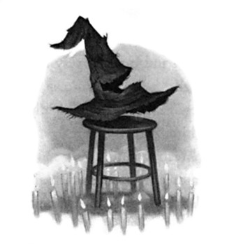
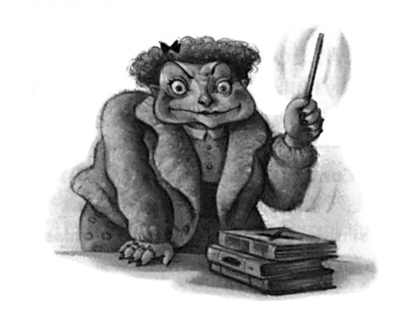
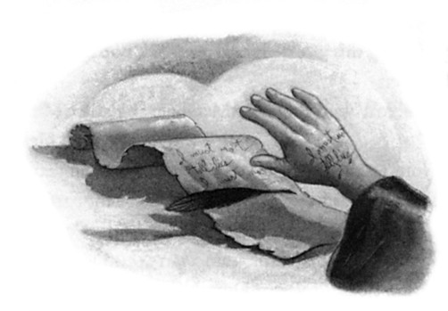
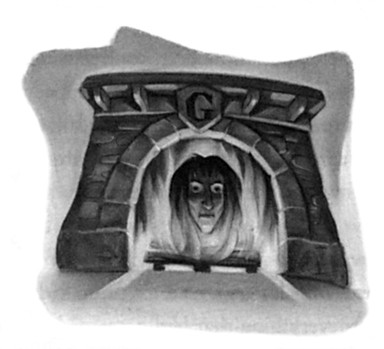

Sources close to the Minister have recently dis-closed that Fudge’s dearest ambition is to seize control of the goblin gold supplies and that he will not hesitate to use force if need be.
“It wouldn’t be the first time, either,” said a Ministry insider. “Cornelius ‘Goblin-Crusher’ Fudge, that’s what his friends cal him, if you could hear him
192
LUNA LOVEGOOD
when he thinks no one’s listening, oh, he’s always talking about the goblins he’s had done in; he’s had them drowned, he’s had them dropped off buildings, he’s had them poisoned, he’s had them cooked in pies. . . .”
Harry did not read any further. Fudge might have many faults but Harry found it extremely hard to imagine him ordering goblins to be cooked in pies. He flicked through the rest of the magazine. Pausing every few pages he read an accusation that the Tutshill Tornados were winning the Quidditch League by a combination of blackmail, illegal broom-tampering, and torture; an interview with a wizard who claimed to have flown to the moon on a Cleansweep Six and brought back a bag of moon frogs to prove it; and an article on ancient runes, which at least explained why Luna had been reading The Quibbler upside down. According to the magazine, if you turned the runes on their heads they revealed a spell to make your enemy’s ears turn into kumquats. In fact, compared to the rest of the articles in The Quibbler, the suggestion that Sirius might really be the lead singer of The Hobgoblins was quite sensible.
“Anything good in there?” asked Ron as Harry closed the magazine.
“Of course not,” said Hermione scathingly, before Harry could answer, “The Quibbler’s rubbish, everyone knows that.”
“Excuse me,” said Luna; her voice had suddenly lost its dreamy quality. “My father’s the editor.”
“I — oh,” said Hermione, looking embarrassed. “Well . . . it’s got some interesting . . . I mean, it’s quite . . .”
“I’ll have it back, thank you,” said Luna coldly, and leaning forward she snatched it out of Harry’s hands. Rifling through it to page fifty-seven, she turned it resolutely upside down again and disappeared behind it, just as the compartment door opened for the third time.
193
CHAPTER TEN
Harry looked around; he had expected this, but that did not make the sight of Draco Malfoy smirking at him from between his cronies Crabbe and Goyle any more enjoyable.
“What?” he said aggressively, before Malfoy could open his mouth.
“Manners, Potter, or I’ll have to give you a detention,” drawled Malfoy, whose sleek blond hair and pointed chin were just like his father’s. “You see, I, unlike you, have been made a prefect, which means that I, unlike you, have the power to hand out punishments.”
“Yeah,” said Harry, “but you, unlike me, are a git, so get out and leave us alone.”
Ron, Hermione, Ginny, and Neville laughed. Malfoy’s lip curled.
“Tell me, how does it feel being second-best to Weasley, Potter?” he asked.
“Shut up, Malfoy,” said Hermione sharply.
“I seem to have touched a nerve,” said Malfoy, smirking. “Well, just watch yourself, Potter, because I’ll be dogging your footsteps in case you step out of line.”
“Get out!” said Hermione, standing up.
Sniggering, Malfoy gave Harry a last malicious look and departed, Crabbe and Goyle lumbering in his wake. Hermione slammed the compartment door behind them and turned to look at Harry, who knew at once that she, like him, had registered what Malfoy had said and been just as unnerved by it.
“Chuck us another Frog,” said Ron, who had clearly noticed nothing.
Harry could not talk freely in front of Neville and Luna. He exchanged another nervous look with Hermione and then stared out of the window.
He had thought Sirius coming with him to the station was a bit of a laugh, but suddenly it seemed reckless, if not downright dangerous.
. . . Hermione had been right. . . . Sirius should not have come. What if Mr. Malfoy had noticed the black dog and told Draco, what if he
194
LUNA LOVEGOOD
had deduced that the Weasleys, Lupin, Tonks, and Moody knew where Sirius was hiding? Or had Malfoy’s use of the word “dogging”
been a coincidence?
The weather remained undecided as they traveled farther and farther north. Rain spattered the windows in a halfhearted way, then the sun put in a feeble appearance before clouds drifted over it once more.
When darkness fell and lamps came on inside the carriages, Luna rolled up The Quibbler, put it carefully away in her bag, and took to staring at everyone in the compartment instead.
Harry was sitting with his forehead pressed against the train window, trying to get a first distant glimpse of Hogwarts, but it was a moonless night and the rain-streaked window was grimy.
“We’d better change,” said Hermione at last. She and Ron pinned their prefect badges carefully to their chests. Harry saw Ron checking how it looked in the black window.
At last the train began to slow down and they heard the usual racket up and down it as everybody scrambled to get their luggage and pets assembled, ready for departure. Ron and Hermione were supposed to supervise all this; they disappeared from the carriage again, leaving Harry and the others to look after Crookshanks and Pigwidgeon.
“I’ll carry that owl, if you like,” said Luna to Harry, reaching out for Pigwidgeon as Neville stowed Trevor careful y in an inside pocket.
“Oh — er — thanks,” said Harry, handing her the cage and hoisting Hedwig’s more securely into his arms.
They shuffled out of the compartment feeling the first sting of the night air on their faces as they joined the crowd in the corridor. Slowly they moved toward the doors. Harry could smell the pine trees that lined the path down to the lake. He stepped down onto the platform and looked around, listening for the familiar call of “Firs’ years over here . . . firs’ years . . .”
But it did not come. Instead a quite different voice, a brisk female
195
CHAPTER TEN
one, was calling, “First years line up over here, please! All first years to me!”
A lantern came swinging toward Harry and by its light he saw the prominent chin and severe haircut of Professor Grubbly-Plank, the witch who had taken over Hagrid’s Care of Magical Creatures lessons for a while the previous year.
“Where’s Hagrid?” he said out loud.
“I don’t know,” said Ginny, “but we’d better get out of the way, we’re blocking the door.”
“Oh yeah . . .”
Harry and Ginny became separated as they moved off along the platform and out through the station. Jostled by the crowd, Harry squinted through the darkness for a glimpse of Hagrid; he had to be here, Harry had been relying on it — seeing Hagrid again had been one of the things to which he had been looking forward most. But there was no sign of him at all.
He can’t have left, Harry told himself as he shuffled slowly through a narrow doorway onto the road outside with the rest of the crowd.
He’s just got a cold or something. . . .
He looked around for Ron or Hermione, wanting to know what they thought about the reappearance of Professor Grubbly-Plank, but neither of them was anywhere near him, so he allowed himself to be shunted forward onto the dark rain-washed road outside Hogsmeade station.
Here stood the hundred or so horseless stagecoaches that always took the students above first year up to the castle. Harry glanced quickly at them, turned away to keep a lookout for Ron and Hermione, then did a double take.
The coaches were no longer horseless. There were creatures standing between the carriage shafts; if he had had to give them a name, he supposed he would have called them horses, though there was something reptilian about them, too. They were completely fleshless, their
196
LUNA LOVEGOOD
black coats clinging to their skeletons, of which every bone was visible. Their heads were dragonish, and their pupil-less eyes white and staring. Wings sprouted from each wither — vast, black leathery wings that looked as though they ought to belong to giant bats.
Standing still and quiet in the gloom, the creatures looked eerie and sinister. Harry could not understand why the coaches were being pulled by these horrible horses when they were quite capable of moving along by themselves.
“Where’s Pig?” said Ron’s voice, right behind Harry.
“That Luna girl was carrying him,” said Harry, turning quickly, eager to consult Ron about Hagrid. “Where d’you reckon —”
“— Hagrid is? I dunno,” said Ron, sounding worried. “He’d better be okay. . . .”
A short distance away, Draco Malfoy, followed by a small gang of cronies including Crabbe, Goyle, and Pansy Parkinson, was pushing some timid-looking second years out of the way so that they could get a coach to themselves. Seconds later Hermione emerged panting from the crowd.
“Malfoy was being absolutely foul to a first year back there, I swear I’m going to report him, he’s only had his badge three minutes and he’s using it to bully people worse than ever. . . . Where’s Crookshanks?”
“Ginny’s got him,” said Harry. “There she is. . . .”
Ginny had just emerged from the crowd, clutching a squirming Crookshanks.
“Thanks,” said Hermione, relieving Ginny of the cat. “Come on, let’s get a carriage together before they all fill up. . . .”
“I haven’t got Pig yet!” Ron said, but Hermione was already heading off toward the nearest unoccupied coach. Harry remained behind with Ron.
“What are those things, d’you reckon?” he asked Ron, nodding at the horrible horses as the other students surged past them.
“What things?”
197
CHAPTER TEN
“Those horse —”
Luna appeared holding Pigwidgeon’s cage in her arms; the tiny owl was twittering excitedly as usual.
“Here you are,” she said. “He’s a sweet little owl, isn’t he?”
“Er . . . yeah . . . He’s all right,” said Ron gruffly. “Well, come on then, let’s get in. . . . what were you saying, Harry?”
“I was saying, what are those horse things?” Harry said, as he, Ron, and Luna made for the carriage in which Hermione and Ginny were already sitting.
“What horse things?”
“The horse things pulling the carriages!” said Harry impatiently; they were, after all, about three feet from the nearest one; it was watching them with empty white eyes. Ron, however, gave Harry a perplexed look.
“What are you talking about?”
“I’m talking about — look!”
Harry grabbed Ron’s arm and wheeled him about so that he was face-to-face with the winged horse. Ron stared straight at it for a second, then looked back at Harry.
“What am I supposed to be looking at?”
“At the — there, between the shafts! Harnessed to the coach! It’s right there in front —”
But as Ron continued to look bemused, a strange thought occurred to Harry.
“Can’t . . . can’t you see them?”
“See what?”
“Can’t you see what’s pulling the carriages?”
Ron looked seriously alarmed now.
“Are you feeling all right, Harry?”
“I . . . yeah . . .”
Harry felt utterly bewildered. The horse was there in front of him, gleaming solidly in the dim light issuing from the station windows
198
LUNA LOVEGOOD
behind them, vapor rising from its nostrils in the chilly night air. Yet unless Ron was faking — and it was a very feeble joke if he was —
Ron could not see it at all.
“Shall we get in, then?” said Ron uncertainly, looking at Harry as though worried about him.
“Yeah,” said Harry. “Yeah, go on . . .”
“It’s all right,” said a dreamy voice from beside Harry as Ron vanished into the coach’s dark interior. “You’re not going mad or anything.
I can see them too.”
“Can you?” said Harry desperately, turning to Luna. He could see the bat-winged horses reflected in her wide, silvery eyes.
“Oh yes,” said Luna, “I’ve been able to see them ever since my first day here. They’ve always pulled the carriages. Don’t worry. You’re just as sane as I am.”
Smiling faintly, she climbed into the musty interior of the carriage after Ron. Not altogether reassured, Harry followed her.
199

C H A P T E R E L E V E N
THE SORTING HAT’S
NEW SONG
arry did not want to tell the others that he and Luna were H having the same hallucination, if that was what it was, so he said nothing about the horses as he sat down inside the carriage and slammed the door behind him. Nevertheless, he could not help watching the silhouettes of the horses moving beyond the window.
“Did everyone see that Grubbly-Plank woman?” asked Ginny.
“What’s she doing back here? Hagrid can’t have left, can he?”
“I’ll be quite glad if he has,” said Luna. “He isn’t a very good teacher, is he?”
“Yes, he is!” said Harry, Ron, and Ginny angrily.
Harry glared at Hermione; she cleared her throat and quickly said,
“Erm . . . yes . . . he’s very good.”
“Well, we think he’s a bit of a joke in Ravenclaw,” said Luna, unfazed.
“You’ve got a rubbish sense of humor then,” Ron snapped, as the wheels below them creaked into motion.
Luna did not seem perturbed by Ron’s rudeness; on the contrary,
200
THE SORTING HAT’S
NEW SONG
she simply watched him for a while as though he were a mildly interesting television program.
Rattling and swaying, the carriages moved in convoy up the road.
When they passed between the tall stone pillars topped with winged boars on either side of the gates to the school grounds, Harry leaned forward to try and see whether there were any lights on in Hagrid’s cabin by the Forbidden Forest, but the grounds were in complete darkness. Hogwarts Castle, however, loomed ever closer: a towering mass of turrets, jet-black against the dark sky, here and there a window blazing fiery bright above them.
The carriages jingled to a halt near the stone steps leading up to the oak front doors and Harry got out of the carriage first. He turned again to look for lit windows down by the forest, but there was definitely no sign of life within Hagrid’s cabin. Unwillingly, because he had half hoped they would have vanished, he turned his eyes instead upon the strange, skeletal creatures standing quietly in the chill night air, their blank white eyes gleaming.
Harry had once before had the experience of seeing something that Ron could not, but that had been a reflection in a mirror, something much more insubstantial than a hundred very solid-looking beasts strong enough to pull a fleet of carriages. If Luna was to be believed, the beasts had always been there but invisible; why, then, could Harry suddenly see them, and why could Ron not?
“Are you coming or what?” said Ron beside him.
“Oh . . . yeah,” said Harry quickly, and they joined the crowd hurrying up the stone steps into the castle.
The entrance hall was ablaze with torches and echoing with footsteps as the students crossed the flagged stone floor for the double doors to the right, leading to the Great Hall and the start-of-term feast.
The four long House tables in the Great Hall were filling up under
201
CHAPTER ELEVEN
the starless black ceiling, which was just like the sky they could glimpse through the high windows. Candles floated in midair all along the tables, illuminating the silvery ghosts who were dotted about the Hall and the faces of the students talking eagerly to one another, exchanging summer news, shouting greetings at friends from other Houses, eyeing one another’s new haircuts and robes. Again Harry noticed people putting their heads together to whisper as he passed; he gritted his teeth and tried to act as though he neither noticed nor cared.
Luna drifted away from them at the Ravenclaw table. The moment they reached Gryffindor’s, Ginny was hailed by some fellow fourth years and left to sit with them; Harry, Ron, Hermione, and Neville found seats together about halfway down the table between Nearly Headless Nick, the Gryffindor House ghost, and Parvati Patil and Lavender Brown, the last two of whom gave Harry airy, overly friendly greetings that made him quite sure they had stopped talking about him a split second before. He had more important things to worry about, however: He was looking over the students’ heads to the staff table that ran along the top wall of the Hall.
“He’s not there.”
Ron and Hermione scanned the staff table too, though there was no real need; Hagrid’s size made him instantly obvious in any lineup.
“He can’t have left,” said Ron, sounding slightly anxious.
“Of course he hasn’t,” said Harry firmly.
“You don’t think he’s . . . hurt, or anything, do you?” said Hermione uneasily.
“No,” said Harry at once.
“But where is he, then?”
There was a pause, then Harry said very quietly, so that Neville, Parvati, and Lavender could not hear, “Maybe he’s not back yet. You know — from his mission — the thing he was doing over the summer for Dumbledore.”
202
THE SORTING HAT’S
NEW SONG
“Yeah . . . yeah, that’ll be it,” said Ron, sounding reassured, but Hermione bit her lip, looking up and down the staff table as though hoping for some conclusive explanation of Hagrid’s absence.
“Who’s that?” she said sharply, pointing toward the middle of the staff table.
Harry’s eyes followed hers. They lit first upon Professor Dumbledore, sitting in his high-backed golden chair at the center of the long staff table, wearing deep-purple robes scattered with silvery stars and a matching hat. Dumbledore’s head was inclined toward the woman sitting next to him, who was talking into his ear. She looked, Harry thought, like somebody’s maiden aunt: squat, with short, curly, mouse-brown hair in which she had placed a horrible pink Alice band that matched the fluffy pink cardigan she wore over her robes. Then she turned her face slightly to take a sip from her goblet and he saw, with a shock of recognition, a pallid, toadlike face and a pair of prominent, pouchy eyes.
“It’s that Umbridge woman!”
“Who?” said Hermione.
“She was at my hearing, she works for Fudge!”
“Nice cardigan,” said Ron, smirking.
“She works for Fudge?” Hermione repeated, frowning. “What on earth’s she doing here, then?”
“Dunno . . .”
Hermione scanned the staff table, her eyes narrowed.
“No,” she muttered, “no, surely not . . .”
Harry did not understand what she was talking about but did not ask; his attention had just been caught by Professor Grubbly-Plank who had just appeared behind the staff table; she worked her way along to the very end and took the seat that ought to have been Hagrid’s. That meant that the first years must have crossed the lake and reached the castle, and sure enough, a few seconds later, the doors from the entrance hall opened. A long line of scared-looking first years
203
CHAPTER ELEVEN
entered, led by Professor McGonagall, who was carrying a stool on which sat an ancient wizard’s hat, heavily patched and darned with a wide rip near the frayed brim.
The buzz of talk in the Great Hall faded away. The first years lined up in front of the staff table facing the rest of the students, and Professor McGonagall placed the stool carefully in front of them, then stood back.
The first years’ faces glowed palely in the candlelight. A small boy right in the middle of the row looked as though he was trembling.
Harry recalled, fleetingly, how terrified he had felt when he had stood there, waiting for the unknown test that would determine to which House he belonged.
The whole school waited with bated breath. Then the rip near the hat’s brim opened wide like a mouth and the Sorting Hat burst into song:
In times of old when I was new
And Hogwarts barely started
The founders of our noble school
Thought never to be parted:
United by a common goal,
They had the selfsame yearning,
To make the world’s best magic school
And pass along their learning.
“Together we will build and teach!”
The four good friends decided
And never did they dream that they
Might someday be divided,
For were there such friends anywhere
As Slytherin and Gryffndor?
Unless it was the second pair
Of Huffepuff and Ravenclaw?
204
THE SORTING HAT’S
NEW SONG
So how could it have gone so wrong?
How could such friendships fail?
Why, I was there and so can tell
The whole sad, sorry tale.
Said Slytherin, “We’ll teach just those
Whose ancestry is purest.”
Said Ravenclaw, “We’ll teach those whose
Intelligence is surest.”
Said Gryffindor, “We’ll teach all those
With brave deeds to their name,”
Said Hufflepujf, “I’ll teach the lot,
And treat them just the same.”
These differences caused little strife
When first they came to light,
For each of the four founders had
A House in which they might
Take only those they wanted, so,
For instance, Slytherin
Took only pure-blood wizards
Of great cunning, just like him,
And only those of sharpest mind
Were taught by Ravenclaw
While the bravest and the boldest
Went to daring Gryffindor.
Good Hufflepujf she took the rest,
And taught them all she knew,
Thus the Houses and their founders
Retained friendships firm and true.
So Hogwarts worked in harmony
For several happy years,
But then discord crept among us
Feeding on our faults and fears.
205
CHAPTER ELEVEN
The Houses that, like pillars four,
Had once held up our school,
Now turned upon each other and,
Divided, sought to rule.
And for a while it seemed the school
Must meet an early end,
What with dueling and with fighting
And the clash of friend on friend
And at last there came a morning
When old Slytherin departed
And though the fighting then died out
He left us quite downhearted.
And never since the founders four
Were whittled down to three
Have the Houses been united
As they once were meant to be.
And now the Sorting Hat is here
And you all know the score:
I sort you into Houses
Because that is what I’m for,
But this year I’ll go further,
Listen closely to my song:
Though condemned I am to split you
Still I worry that it’s wrong,
Though I must fulfill my duty
And must quarter every year
Still I wonder whether sorting
May not bring the end I fear.
Oh, know the perils, read the signs,
The warning history shows,
For our Hogwarts is in danger
From external, deadly foes
206
THE SORTING HAT’S
NEW SONG
And we must unite inside her
Or we’ll crumble from within.
I have told you, I have warned you. . . .
Let the Sorting now begin.
The hat became motionless once more; applause broke out, though it was punctured, for the first time in Harry’s memory, with muttering and whispers. All across the Great Hall students were exchanging remarks with their neighbors and Harry, clapping along with everyone else, knew exactly what they were talking about.
“Branched out a bit this year, hasn’t it?” said Ron, his eyebrows raised.
“Too right it has,” said Harry.
The Sorting Hat usually confined itself to describing the different qualities looked for by each of the four Hogwarts Houses and its own role in sorting them; Harry could not remember it ever trying to give the school advice before.
“I wonder if it’s ever given warnings before?” said Hermione, sounding slightly anxious.
“Yes, indeed,” said Nearly Headless Nick knowledgeably, leaning across Neville toward her (Neville winced, it was very uncomfortable to have a ghost lean through you). “The hat feels itself honor-bound to give the school due warning whenever it feels —”
But Professor McGonagall, who was waiting to read out the list of first years’ names, was giving the whispering students the sort of look that scorches. Nearly Headless Nick placed a see-through finger to his lips and sat primly upright again as the muttering came to an abrupt end. With a last frowning look that swept the four House tables, Professor McGonagall lowered her eyes to her long piece of parchment and called out,
“Abercrombie, Euan.”
The terrified-looking boy Harry had noticed earlier stumbled
207
CHAPTER ELEVEN
forward and put the hat on his head; it was only prevented from falling right down to his shoulders by his very prominent ears. The hat considered for a moment, then the rip near the brim opened again and shouted, “GRYFFINDOR!”
Harry clapped loudly with the rest of Gryffindor House as Euan Abercrombie staggered to their table and sat down, looking as though he would like very much to sink through the floor and never be looked at again.
Slowly the long line of first years thinned; in the pauses between the names and the Sorting Hat’s decisions, Harry could hear Ron’s stomach rumbling loudly. Finally, “Zeller, Rose” was sorted into Hufflepuff, and Professor McGonagall picked up the hat and stool and marched them away as Professor Dumbledore rose to his feet.
Harry was somehow soothed to see Dumbledore standing before them all, whatever his recent bitter feelings toward his headmaster.
Between the absence of Hagrid and the presence of those dragonish horses, he had felt that his return to Hogwarts, so long anticipated, was full of unexpected surprises like jarring notes in a familiar song.
But this, at least, was how it was supposed to be: their headmaster rising to greet them all before the start-of-term feast.
“To our newcomers,” said Dumbledore in a ringing voice, his arms stretched wide and a beaming smile on his lips, “welcome! To our old hands — welcome back! There is a time for speech making, but this is not it. Tuck in!”
There was an appreciative laugh and an outbreak of applause as Dumbledore sat down neatly and threw his long beard over his shoulder so as to keep it out of the way of his plate — for food had appeared out of nowhere, so that the five long tables were groaning under joints and pies and dishes of vegetables, bread, sauces, and flagons of pumpkin juice.
“Excellent,” said Ron, with a kind of groan of longing, and he seized the nearest plate of chops and began piling them onto his plate, watched wistfully by Nearly Headless Nick.
208
THE SORTING HAT’S
NEW SONG
“What were you saying before the Sorting?” Hermione asked the ghost. “About the hat giving warnings?”
“Oh yes,” said Nick, who seemed glad of a reason to turn away from Ron, who was now eating roast potatoes with almost indecent enthusiasm. “Yes, I have heard the hat give several warnings before, always at times when it detects periods of great danger for the school.
And always, of course, its advice is the same: Stand together, be strong from within.”
“Ow kunnit nofe skusin danger ifzat?” said Ron.
His mouth was so full Harry thought it was quite an achievement for him to make any noise at all.
“I beg your pardon?” said Nearly Headless Nick politely, while Hermione looked revolted. Ron gave an enormous swallow and said,
“How can it know if the school’s in danger if it’s a hat?”
“I have no idea,” said Nearly Headless Nick. “Of course, it lives in Dumbledore’s office, so I daresay it picks things up there.”
“And it wants all the Houses to be friends?” said Harry, looking over at the Slytherin table, where Draco Malfoy was holding court.
“Fat chance.”
“Well, now, you shouldn’t take that attitude,” said Nick reprovingly.
“Peaceful cooperation, that’s the key. We ghosts, though we belong to separate Houses, maintain links of friendship. In spite of the compet-itiveness between Gryffindor and Slytherin, I would never dream of seeking an argument with the Bloody Baron.”
“Only because you’re terrified of him,” said Ron.
Nearly Headless Nick looked highly affronted.
“Terrified? I hope I, Sir Nicholas de Mimsy-Porpington, have never been guilty of cowardice in my life! The noble blood that runs in my veins —”
“What blood?” asked Ron. “Surely you haven’t still got — ?”
“It’s a figure of speech!” said Nearly Headless Nick, now so annoyed his head was trembling ominously on his partially severed neck. “I
209
CHAPTER ELEVEN
assume I am still allowed to enjoy the use of whichever words I like, even if the pleasures of eating and drinking are denied me! But I am quite used to students poking fun at my death, I assure you!”
“Nick, he wasn’t really laughing at you!” said Hermione, throwing a furious look at Ron.
Unfortunately, Ron’s mouth was packed to exploding point again and all he could manage was “node iddum eentup sechew,” which Nick did not seem to think constituted an adequate apology. Rising into the air, he straightened his feathered hat and swept away from them to the other end of the table, coming to rest between the Creevey brothers, Colin and Dennis.
“Well done, Ron,” snapped Hermione.
“What?” said Ron indignantly, having managed, finally, to swallow his food. “I’m not allowed to ask a simple question?”
“Oh forget it,” said Hermione irritably, and the pair of them spent the rest of the meal in huffy silence.
Harry was too used to their bickering to bother trying to reconcile them; he felt it was a better use of his time to eat his way steadily through his steak-and-kidney pie, then a large plateful of his favorite treacle tart.
When all the students had finished eating and the noise level in the hall was starting to creep upward again, Dumbledore got to his feet once more. Talking ceased immediately as all turned to face the headmaster. Harry was feeling pleasantly drowsy now. His four-poster bed was waiting somewhere above, wonderfully warm and soft. . . .
“Well, now that we are all digesting another magnificent feast, I beg a few moments of your attention for the usual start-of-term notices,”
said Dumbledore. “First years ought to know that the forest in the grounds is out of bounds to students — and a few of our older students ought to know by now too.” (Harry, Ron, and Hermione exchanged smirks.)
210
THE SORTING HAT’S
NEW SONG
“Mr. Filch, the caretaker, has asked me, for what he tells me is the four hundred and sixty-second time, to remind you all that magic is not permitted in corridors between classes, nor are a number of other things, all of which can be checked on the extensive list now fastened to Mr. Filch’s office door.
“We have had two changes in staffing this year. We are very pleased to welcome back Professor Grubbly-Plank, who will be taking Care of Magical Creatures lessons; we are also delighted to introduce Professor Umbridge, our new Defense Against the Dark Arts teacher.”
There was a round of polite but fairly unenthusiastic applause during which Harry, Ron, and Hermione exchanged slightly panicked looks; Dumbledore had not said for how long Grubbly-Plank would be teaching.
Dumbledore continued, “Tryouts for the House Quidditch teams will take place on the —”
He broke off, looking inquiringly at Professor Umbridge. As she was not much taller standing than sitting, there was a moment when nobody understood why Dumbledore had stopped talking, but then Professor Umbridge said, “Hem, hem, ” and it became clear that she had got to her feet and was intending to make a speech.
Dumbledore only looked taken aback for a moment, then he sat back down smartly and looked alertly at Professor Umbridge as though he desired nothing better than to listen to her talk. Other members of staff were not as adept at hiding their surprise. Professor Sprout’s eyebrows had disappeared into her flyaway hair, and Professor McGonagall’s mouth was as thin as Harry had ever seen it. No new teacher had ever interrupted Dumbledore before. Many of the students were smirking; this woman obviously did not know how things were done at Hogwarts.
“Thank you, Headmaster,” Professor Umbridge simpered, “for those kind words of welcome.”
211
CHAPTER ELEVEN
Her voice was high-pitched, breathy, and little-girlish and again, Harry felt a powerful rush of dislike that he could not explain to himself; all he knew was that he loathed everything about her, from her stupid voice to her fluffy pink cardigan. She gave another little throat-clearing cough (“Hem, hem”) and continued: “Wel , it is lovely to be back at Hogwarts, I must say!” She smiled, revealing very pointed teeth. “And to see such happy little faces looking back at me!”
Harry glanced around. None of the faces he could see looked happy; on the contrary, they all looked rather taken aback at being addressed as though they were five years old.
“I am very much looking forward to getting to know you all, and I’m sure we’ll be very good friends!”
Students exchanged looks at this; some of them were barely concealing grins.
“I’ll be her friend as long as I don’t have to borrow that cardigan,”
Parvati whispered to Lavender, and both of them lapsed into silent giggles.
Professor Umbridge cleared her throat again (“Hem, hem”), but when she continued, some of the breathiness had vanished from her voice. She sounded much more businesslike and now her words had a dull learned-by-heart sound to them.
“The Ministry of Magic has always considered the education of young witches and wizards to be of vital importance. The rare gifts with which you were born may come to nothing if not nurtured and honed by careful instruction. The ancient skills unique to the Wizarding community must be passed down through the generations lest we lose them forever. The treasure trove of magical knowledge amassed by our ancestors must be guarded, replenished, and polished by those who have been called to the noble profession of teaching.”
Professor Umbridge paused here and made a little bow to her fellow staff members, none of whom bowed back. Professor McGonagall’s dark eyebrows had contracted so that she looked positively
212
THE SORTING HAT’S
NEW SONG
hawklike, and Harry distinctly saw her exchange a significant glance with Professor Sprout as Umbridge gave another little “Hem, hem” and went on with her speech.
“Every headmaster and headmistress of Hogwarts has brought something new to the weighty task of governing this historic school, and that is as it should be, for without progress there will be stagnation and decay. There again, progress for progress’s sake must be discouraged, for our tried and tested traditions often require no tinkering. A balance, then, between old and new, between permanence and change, between tradition and innovation . . .”
Harry found his attentiveness ebbing, as though his brain was slipping in and out of tune. The quiet that always filled the Hall when Dumbledore was speaking was breaking up as students put their heads together, whispering and giggling. Over at the Ravenclaw table, Cho Chang was chatting animatedly with her friends. A few seats along from Cho, Luna Lovegood had got out The Quibbler again. Meanwhile at the Hufflepuff table, Ernie Macmillan was one of the few still staring at Professor Umbridge, but he was glassy-eyed and Harry was sure he was only pretending to listen in an attempt to live up to the new prefect’s badge gleaming on his chest.
Professor Umbridge did not seem to notice the restlessness of her audience. Harry had the impression that a full-scale riot could have broken out under her nose and she would have plowed on with her speech. The teachers, however, were still listening very attentively, and Hermione seemed to be drinking in every word Umbridge spoke, though judging by her expression, they were not at all to her taste.
“. . . because some changes will be for the better, while others will come, in the fullness of time, to be recognized as errors of judgment.
Meanwhile, some old habits will be retained, and rightly so, whereas others, outmoded and outworn, must be abandoned. Let us move forward, then, into a new era of openness, effectiveness, and account-ability, intent on preserving what ought to be preserved, perfecting
213
CHAPTER ELEVEN
what needs to be perfected, and pruning wherever we find practices that ought to be prohibited.”
She sat down. Dumbledore clapped. The staff followed his lead, though Harry noticed that several of them brought their hands together only once or twice before stopping. A few students joined in, but most had been taken unawares by the end of the speech, not having listened to more than a few words of it, and before they could start applauding properly, Dumbledore had stood up again.
“Thank you very much, Professor Umbridge, that was most illuminating,” he said, bowing to her. “Now — as I was saying, Quidditch tryouts will be held . . .”
“Yes, it certainly was illuminating,” said Hermione in a low voice.
“You’re not telling me you enjoyed it?” Ron said quietly, turning a glazed face upon Hermione. “That was about the dullest speech I’ve ever heard, and I grew up with Percy.”
“I said illuminating, not enjoyable,” said Hermione. “It explained a lot.”
“Did it?” said Harry in surprise. “Sounded like a load of waffle to me.”
“There was some important stuff hidden in the waffle,” said Hermione grimly.
“Was there?” said Ron blankly.
“How about ‘progress for progress’s sake must be discouraged’? How about ‘pruning wherever we find practices that ought to be prohibited’?”
“Well, what does that mean?” said Ron impatiently.
“I’ll tell you what it means,” said Hermione ominously. “It means the Ministry’s interfering at Hogwarts.”
There was a great clattering and banging all around them; Dumbledore had obviously just dismissed the school, because everyone was standing up ready to leave the Hall. Hermione jumped up, looking flustered.
“Ron, we’re supposed to show the first years where to go!”
214
THE SORTING HAT’S
NEW SONG
“Oh yeah,” said Ron, who had obviously forgotten. “Hey — hey you lot! Midgets!”
“Ron!”
“Well, they are, they’re titchy. . . .”
“I know, but you can’t call them midgets. . . . First years!” Hermione called commandingly along the table. “This way, please!”
A group of new students walked shyly up the gap between the Gryffindor and Hufflepuff tables, all of them trying hard not to lead the group. They did indeed seem very small; Harry was sure he had not appeared that young when he had arrived here. He grinned at them. A blond boy next to Euan Abercrombie looked petrified, nudged Euan, and whispered something in his ear. Euan Abercrombie looked equally frightened and stole a horrified look at Harry, who felt the grin slide off his face like Stinksap.
“See you later,” he said to Ron and Hermione and he made his way out of the Great Hall alone, doing everything he could to ignore more whispering, staring, and pointing as he passed. He kept his eyes fixed ahead as he wove his way through the crowd in the entrance hall, then he hurried up the marble staircase, took a couple of concealed shortcuts, and had soon left most of the crowds behind.
He had been stupid not to expect this, he thought angrily, as he walked through much emptier upstairs corridors. Of course everyone was staring at him: He had emerged from the Triwizard maze two months ago clutching the dead body of a fellow student and claiming to have seen Lord Voldemort return to power. There had not been time last term to explain himself before everyone went home, even if he had felt up to giving the whole school a detailed account of the terrible events in that graveyard.
He had reached the end of the corridor to the Gryffindor common room and had come to a halt in front of the portrait of the Fat Lady before he realized that he did not know the new password.
215
CHAPTER ELEVEN
“Er . . .” he said glumly, staring up at the Fat Lady, who smoothed the folds of her pink satin dress and looked sternly back at him.
“No password, no entrance,” she said loftily.
“Harry, I know it!” someone panted from behind him, and he turned to see Neville jogging toward him. “Guess what it is? I’m actual y going to be able to remember it for once —” He waved the stunted little cactus he had shown them on the train. “Mimbulus mimbletonia!”
“Correct,” said the Fat Lady, and her portrait swung open toward them like a door, revealing a circular hole in the wall behind, through which Harry and Neville now climbed.
The Gryffindor common room looked as welcoming as ever, a cozy circular tower room full of dilapidated squashy armchairs and rickety old tables. A fire was crackling merrily in the grate and a few people were warming their hands before going up to their dormitories; on the other side of the room Fred and George Weasley were pinning something up on the notice board. Harry waved good night to them and headed straight for the door to the boys’ dormitories; he was not in much of a mood for talking at the moment. Neville followed him.
Dean Thomas and Seamus Finnigan had reached the dormitory first and were in the process of covering the walls beside their beds with posters and photographs. They had been talking as Harry pushed open the door but stopped abruptly the moment they saw him. Harry wondered whether they had been talking about him, then whether he was being paranoid.
“Hi,” he said, moving across to his own trunk and opening it.
“Hey, Harry,” said Dean, who was putting on a pair of pajamas in the West Ham colors. “Good holiday?”
“Not bad,” muttered Harry, as a true account of his holiday would have taken most of the night to relate and he could not face it. “You?”
“Yeah, it was okay,” chuckled Dean. “Better than Seamus’s anyway, he was just telling me.”
216
THE SORTING HAT’S
NEW SONG
“Why, what happened, Seamus?” Neville asked as he placed his Mimbulus mimbletonia tenderly on his bedside cabinet.
Seamus did not answer immediately; he was making rather a meal of ensuring that his poster of the Kenmare Kestrels Quidditch team was quite straight. Then he said, with his back still turned to Harry,
“Me mam didn’t want me to come back.”
“What?” said Harry, pausing in the act of pulling off his robes.
“She didn’t want me to come back to Hogwarts.”
Seamus turned away from his poster and pulled his own pajamas out of his trunk, still not looking at Harry.
“But — why?” said Harry, astonished. He knew that Seamus’s mother was a witch and could not understand, therefore, why she should have come over so Dursley-ish.
Seamus did not answer until he had finished buttoning his pajamas.
“Well,” he said in a measured voice, “I suppose . . . because of you.”
“What d’you mean?” said Harry quickly. His heart was beating rather fast. He felt vaguely as though something was closing in on him.
“Well,” said Seamus again, still avoiding Harry’s eyes, “she . . . er
. . . well, it’s not just you, it’s Dumbledore too . . .”
“She believes the Daily Prophet?” said Harry. “She thinks I’m a liar and Dumbledore’s an old fool?”
Seamus looked up at him. “Yeah, something like that.”
Harry said nothing. He threw his wand down onto his bedside table, pulled off his robes, stuffed them angrily into his trunk, and pulled on his pajamas. He was sick of it; sick of being the person who was stared at and talked about all the time. If any of them knew, if any of them had the faintest idea what it felt like to be the one all these things had happened to . . . Mrs. Finnigan had no idea, the stupid woman, he thought savagely.
He got into bed and made to pull the hangings closed around him, but before he could do so, Seamus said, “Look . . . what did happen that night when . . . you know, when . . . with Cedric Diggory and all?”
217
CHAPTER ELEVEN
Seamus sounded nervous and eager at the same time. Dean, who had been bending over his trunk, trying to retrieve a slipper, went oddly still and Harry knew he was listening hard.
“What are you asking me for?” Harry retorted. “Just read the Daily Prophet like your mother, why don’t you? That’ll tell you all you need to know.”
“Don’t you have a go at my mother,” snapped Seamus.
“I’ll have a go at anyone who calls me a liar,” said Harry.
“Don’t talk to me like that!”
“I’ll talk to you how I want,” said Harry, his temper rising so fast he snatched his wand back from his bedside table. “If you’ve got a problem sharing a dormitory with me, go and ask McGonagall if you can be moved, stop your mummy worrying —”
“Leave my mother out of this, Potter!”
“What’s going on?”
Ron had appeared in the doorway. His wide eyes traveled from Harry, who was kneeling on his bed with his wand pointing at Seamus, to Seamus, who was standing there with his fists raised.
“He’s having a go at my mother!” Seamus yelled.
“What?” said Ron. “Harry wouldn’t do that — we met your mother, we liked her. . . .”
“That’s before she started believing every word the stinking Daily Prophet writes about me!” said Harry at the top of his voice.
“Oh,” said Ron, comprehension dawning across his freckled face.
“Oh . . . right.”
“You know what?” said Seamus heatedly, casting Harry a venomous look. “He’s right, I don’t want to share a dormitory with him anymore, he’s a madman.”
“That’s out of order, Seamus,” said Ron, whose ears were starting to glow red, always a danger sign.
“Out of order, am I?” shouted Seamus, who in contrast with Ron
218
THE SORTING HAT’S
NEW SONG
was turning paler. “You believe all the rubbish he’s come out with about You-Know-Who, do you, you reckon he’s telling the truth?”
“Yeah, I do!” said Ron angrily.
“Then you’re mad too,” said Seamus in disgust.
“Yeah? Well unfortunately for you, pal, I’m also a prefect!” said Ron, jabbing himself in the chest with a finger. “So unless you want detention, watch your mouth!”
Seamus looked for a few seconds as though detention would be a reasonable price to pay to say what was going through his mind; but with a noise of contempt he turned on his heel, vaulted into bed, and pulled the hangings shut with such violence that they were ripped from the bed and fell in a dusty pile to the floor. Ron glared at Seamus, then looked at Dean and Neville.
“Anyone else’s parents got a problem with Harry?” he said aggressively.
“My parents are Muggles, mate,” said Dean, shrugging. “They don’t know nothing about no deaths at Hogwarts, because I’m not stupid enough to tell them.”
“You don’t know my mother, she’ll weasel anything out of anyone!”
Seamus snapped at him. “Anyway, your parents don’t get the Daily Prophet, they don’t know our headmaster’s been sacked from the Wizengamot and the International Confederation of Wizards because he’s losing his marbles —”
“My gran says that’s rubbish,” piped up Nevil e. “She says it’s the Daily Prophet that’s going downhill, not Dumbledore. She’s canceled our subscription. We believe Harry,” he said simply. He climbed into bed and pulled the covers up to his chin, looking owlishly over them at Seamus. “My gran’s always said You-Know-Who would come back one day. She says if Dumbledore says he’s back, he’s back.”
Harry felt a rush of gratitude toward Neville. Nobody else said anything. Seamus got out his wand, repaired the bed hangings, and
219
CHAPTER ELEVEN
vanished behind them. Dean got into bed, rolled over, and fell silent.
Neville, who appeared to have nothing more to say either, was gazing fondly at his moonlit cactus.
Harry lay back on his pillows while Ron bustled around the next bed, putting his things away. He felt shaken by the argument with Seamus, whom he had always liked very much. How many more people were going to suggest that he was lying or unhinged?
Had Dumbledore suffered like this all summer, as first the Wizengamot, then the International Confederation of Wizards had thrown him from their ranks? Was it anger at Harry, perhaps, that had stopped Dumbledore getting in touch with him for months? The two of them were in this together, after all; Dumbledore had believed Harry, announced his version of events to the whole school and then to the wider Wizarding community. Anyone who thought Harry was a liar had to think that Dumbledore was too or else that Dumbledore had been hoodwinked. . . .
They’ll know we’re right in the end, thought Harry miserably, as Ron got into bed and extinguished the last candle in the dormitory. But he wondered how many attacks like Seamus’s he would have to endure before that time came.
220

C H A P T E R T W E L V E
PROFESSOR UMBRIDGE
eamus dressed at top speed next morning and left the dormitory S before Harry had even put on his socks.
“Does he think he’ll turn into a nutter if he stays in a room with me too long?” asked Harry loudly, as the hem of Seamus’s robes whipped out of sight.
“Don’t worry about it, Harry,” Dean muttered, hoisting his schoolbag onto his shoulder. “He’s just . . .” But apparently he was unable to say exactly what Seamus was, and after a slightly awkward pause followed him out of the room.
Neville and Ron both gave Harry it’s-his-problem-not-yours looks, but Harry was not much consoled. How much more of this was he going to have to take?
“What’s the matter?” asked Hermione five minutes later, catching up with Harry and Ron halfway across the common room as they all headed toward breakfast. “You look absolutely — oh for heaven’s sake.”
She was staring at the common room notice board, where a large new sign had been put up.
221
CHAPTER TWELVE
GALLONS OF GALLEONS!
Pocket money failing to keep pace with your outgoings?
Like to earn a little extra gold?
Contact Fred and George Weasley,
Gryffindor common room,
for simple, part-time, virtually painless jobs (WE REGRET THAT ALL WORK IS UNDERTAKEN AT APPLICANT’S OWN RISK)
“They are the limit,” said Hermione grimly, taking down the sign, which Fred and George had pinned up over a poster giving the date of the first Hogsmeade weekend in October. “We’ll have to talk to them, Ron.”
Ron looked positively alarmed.
“Why?”
“Because we’re prefects!” said Hermione, as they climbed out through the portrait hole. “It’s up to us to stop this kind of thing!”
Ron said nothing; Harry could tell from his glum expression that the prospect of stopping Fred and George doing exactly what they liked was not one that he found inviting.
“Anyway, what’s up, Harry?” Hermione continued, as they walked down a flight of stairs lined with portraits of old witches and wizards, all of whom ignored them, being engrossed in their own conversation.
“You look really angry about something.”
“Seamus reckons Harry’s lying about You-Know-Who,” said Ron succinctly, when Harry did not respond.
Hermione, whom Harry had expected to react angrily on his behalf, sighed.
“Yes, Lavender thinks so too,” she said gloomily.
“Been having a nice little chat with her about whether or not I’m a lying, attention-seeking prat, have you?” Harry said loudly.
“No,” said Hermione calmly, “I told her to keep her big fat mouth
222
PROFESSOR UMBRIDGE
shut about you, actually. And it would be quite nice if you stopped jumping down Ron’s and my throats, Harry, because if you haven’t noticed, we’re on your side.”
There was a short pause.
“Sorry,” said Harry in a low voice.
“That’s quite all right,” said Hermione with dignity. Then she shook her head. “Don’t you remember what Dumbledore said at the end-of-term feast last year?”
Harry and Ron both looked at her blankly, and Hermione sighed again.
“About You-Know-Who. He said, ‘ His gift for spreading discord and enmity is very great. We can fight it only by showing an equally strong bond of friendship and trust —’ ”
“How do you remember stuff like that?” asked Ron, looking at her in admiration.
“I listen, Ron,” said Hermione with a touch of asperity.
“So do I, but I still couldn’t tell you exactly what —”
“The point,” Hermione pressed on loudly, “is that this sort of thing is exactly what Dumbledore was talking about. You-Know-Who’s only been back two months, and we’ve started fighting among ourselves. And the Sorting Hat’s warning was the same — stand together, be united —”
“And Harry said it last night,” retorted Ron, “if that means we’re supposed to get matey with the Slytherins, fat chance.”
“Well, I think it’s a pity we’re not trying for a bit of inter-House unity,” said Hermione crossly.
They had reached the foot of the marble staircase. A line of fourth-year Ravenclaws was crossing the entrance hall; they caught sight of Harry and hurried to form a tighter group, as though frightened he might attack stragglers.
“Yeah, we really ought to be trying to make friends with people like that,” said Harry sarcastically.
223
CHAPTER TWELVE
They followed the Ravenclaws into the Great Hall, looking instinctively at the staff table as they entered. Professor Grubbly-Plank was chatting to Professor Sinistra, the Astronomy teacher, and Hagrid was once again conspicuous only by his absence. The enchanted ceiling above them echoed Harry’s mood; it was a miserable rain-cloud gray.
“Dumbledore didn’t even mention how long that Grubbly-Plank woman’s staying,” he said, as they made their way across to the Gryffindor table.
“Maybe . . .” said Hermione thoughtfully.
“What?” said both Harry and Ron together.
“Well . . . maybe he didn’t want to draw attention to Hagrid not being here.”
“What d’you mean, draw attention to it?” said Ron, half laughing.
“How could we not notice?”
Before Hermione could answer, a tall black girl with long, braided hair had marched up to Harry.
“Hi, Angelina.”
“Hi,” she said briskly, “good summer?” And without waiting for an answer, “Listen, I’ve been made Gryffindor Quidditch Captain.”
“Nice one,” said Harry, grinning at her; he suspected Angelina’s pep talks might not be as long-winded as Oliver Wood’s had been, which could only be an improvement.
“Yeah, well, we need a new Keeper now Oliver’s left. Tryouts are on Friday at five o’clock and I want the whole team there, all right? Then we can see how the new person’ll fit in.”
“Okay,” said Harry, and she smiled at him and departed.
“I’d forgotten Wood had left,” said Hermione vaguely, sitting down beside Ron and pulling a plate of toast toward her. “I suppose that will make quite a difference to the team?”
“I s’pose,” said Harry, taking the bench opposite. “He was a good Keeper. . . .”
224
PROFESSOR UMBRIDGE
“Still, it won’t hurt to have some new blood, will it?” said Ron.
With a whoosh and a clatter, hundreds of owls came soaring in through the upper windows. They descended all over the Hall, bringing letters and packages to their owners and showering the breakfasters with droplets of water; it was clearly raining hard outside. Hedwig was nowhere to be seen, but Harry was hardly surprised; his only corre-spondent was Sirius, and he doubted Sirius would have anything new to tell him after only twenty-four hours apart. Hermione, however, had to move her orange juice aside quickly to make way for a large damp barn owl bearing a sodden Daily Prophet in its beak.
“What are you still getting that for?” said Harry irritably, thinking of Seamus, as Hermione placed a Knut in the leather pouch on the owl’s leg and it took off again. “I’m not bothering . . . load of rubbish.”
“It’s best to know what the enemy are saying,” said Hermione darkly, and she unfurled the newspaper and disappeared behind it, not emerging until Harry and Ron had finished eating.
“Nothing,” she said simply, rolling up the newspaper and laying it down by her plate. “Nothing about you or Dumbledore or anything.”
Professor McGonagall was now moving along the table handing out schedules.
“Look at today!” groaned Ron. “History of Magic, double Potions, Divination, and double Defense Against the Dark Arts . . . Binns, Snape, Trelawney, and that Umbridge woman all in one day! I wish Fred and George’d hurry up and get those Skiving Snackboxes sorted. . . .”
“Do mine ears deceive me?” said Fred, arriving with George and squeezing onto the bench beside Harry. “Hogwarts prefects surely don’t wish to skive off lessons?”
“Look what we’ve got today,” said Ron grumpily, shoving his schedule under Fred’s nose. “That’s the worst Monday I’ve ever seen.”
“Fair point, little bro,” said Fred, scanning the column. “You can have a bit of Nosebleed Nougat cheap if you like.”
225
CHAPTER TWELVE
“Why’s it cheap?” said Ron suspiciously.
“Because you’ll keep bleeding till you shrivel up, we haven’t got an antidote yet,” said George, helping himself to a kipper.
“Cheers,” said Ron moodily, pocketing his schedule, “but I think I’ll take the lessons.”
“And speaking of your Skiving Snackboxes,” said Hermione, eyeing Fred and George beadily, “you can’t advertise for testers on the Gryffindor notice board.”
“Says who?” said George, looking astonished.
“Says me,” said Hermione. “And Ron.”
“Leave me out of it,” said Ron hastily.
Hermione glared at him. Fred and George sniggered.
“You’ll be singing a different tune soon enough, Hermione,” said Fred, thickly buttering a crumpet. “You’re starting your fifth year, you’ll be begging us for a Snackbox before long.”
“And why would starting fifth year mean I want a Skiving Snackbox?” asked Hermione.
“Fifth year’s O.W.L. year,” said George.
“So?”
“So you’ve got your exams coming up, haven’t you? They’ll be keeping your noses so hard to that grindstone they’ll be rubbed raw,” said Fred with satisfaction.
“Half our year had minor breakdowns coming up to O.W.L.s,” said George happily. “Tears and tantrums . . . Patricia Stimpson kept coming over faint. . . .”
“Kenneth Towler came out in boils, d’you remember?” said Fred reminiscently.
“That’s ’cause you put Bulbadox Powder in his pajamas,” said George.
“Oh yeah,” said Fred, grinning. “I’d forgotten. . . . Hard to keep track sometimes, isn’t it?”
“Anyway, it’s a nightmare of a year, the fifth,” said George. “If you
226
PROFESSOR UMBRIDGE
care about exam results anyway. Fred and I managed to keep our spirits up somehow.”
“Yeah . . . you got, what was it, three O.W.L.s each?” said Ron.
“Yep,” said Fred unconcernedly. “But we feel our futures lie outside the world of academic achievement.”
“We seriously debated whether we were going to bother coming back for our seventh year,” said George brightly, “now that we’ve got —”
He broke off at a warning look from Harry, who knew George had been about to mention the Triwizard winnings he had given them.
“— now that we’ve got our O.W.L.s,” George said hastily. “I mean, do we really need N.E.W.T.s? But we didn’t think Mum could take us leaving school early, not on top of Percy turning out to be the world’s biggest prat.”
“We’re not going to waste our last year here, though,” said Fred, looking affectionately around at the Great Hall. “We’re going to use it to do a bit of market research, find out exactly what the average Hogwarts student requires from his joke shop, carefully evaluate the results of our research, and then produce the products to fit the demand.”
“But where are you going to get the gold to start a joke shop?”
asked Hermione skeptically. “You’re going to need all the ingredients and materials — and premises too, I suppose. . . .”
Harry did not look at the twins. His face felt hot; he deliberately dropped his fork and dived down to retrieve it. He heard Fred say overhead, “Ask us no questions and we’ll tell you no lies, Hermione.
C’mon, George, if we get there early we might be able to sell a few Extendable Ears before Herbology.”
Harry emerged from under the table to see Fred and George walking away, each carrying a stack of toast.
“What did that mean?” said Hermione, looking from Harry to Ron. “ ‘Ask us no questions . . .’ Does that mean they’ve already got some gold to start a joke shop?”
227
CHAPTER TWELVE
“You know, I’ve been wondering about that,” said Ron, his brow furrowed. “They bought me a new set of dress robes this summer, and I couldn’t understand where they got the Galleons. . . .”
Harry decided it was time to steer the conversation out of these dangerous waters.
“D’you reckon it’s true this year’s going to be really tough? Because of the exams?”
“Oh yeah,” said Ron. “Bound to be, isn’t it? O.W.L.s are really important, affect the jobs you can apply for and everything. We get career advice too, later this year, Bill told me. So you can choose what N.E.W.T.s you want to do next year.”
“D’you know what you want to do after Hogwarts?” Harry asked the other two, as they left the Great Hall shortly afterward and set off toward their History of Magic classroom.
“Not really,” said Ron slowly. “Except . . . well . . .”
He looked slightly sheepish.
“What?” Harry urged him.
“Well, it’d be cool to be an Auror,” said Ron in an offhand voice.
“Yeah, it would,” said Harry fervently.
“But they’re, like, the elite,” said Ron. “You’ve got to be really good.
What about you, Hermione?”
“I don’t know,” said Hermione. “I think I’d really like to do something worthwhile.”
“An Auror’s worthwhile!” said Harry.
“Yes, it is, but it’s not the only worthwhile thing,” said Hermione thoughtfully. “I mean, if I could take S.P.E.W. further . . .”
Harry and Ron carefully avoided looking at each other.
History of Magic was by common consent the most boring subject ever devised by Wizard-kind. Professor Binns, their ghost teacher, had a wheezy, droning voice that was almost guaranteed to cause severe drowsiness within ten minutes, five in warm weather. He never varied the form of their lessons, but lectured them without pausing while
228
PROFESSOR UMBRIDGE
they took notes, or rather, gazed sleepily into space. Harry and Ron had so far managed to scrape passes in this subject only by copying Hermione’s notes before exams; she alone seemed able to resist the so-porific power of Binns’s voice.
Today they suffered through three quarters of an hour’s droning on the subject of giant wars. Harry heard just enough within the first ten minutes to appreciate dimly that in another teacher’s hands this subject might have been mildly interesting, but then his brain disengaged, and he spent the remaining thirty-five minutes playing hangman on a corner of his parchment with Ron, while Hermione shot them filthy looks out of the corner of her eye.
“How would it be,” she asked them coldly as they left the classroom for break (Binns drifting away through the blackboard), “if I refused to lend you my notes this year?”
“We’d fail our O.W.L.s,” said Ron. “If you want that on your conscience, Hermione . . .”
“Well, you’d deserve it,” she snapped. “You don’t even try to listen to him, do you?”
“We do try,” said Ron. “We just haven’t got your brains or your memory or your concentration — you’re just cleverer than we are —
is it nice to rub it in?”
“Oh, don’t give me that rubbish,” said Hermione, but she looked slightly mollified as she led the way out into the damp courtyard.
A fine misty drizzle was falling, so that the people standing in huddles around the yard looked blurred at the edges. Harry, Ron, and Hermione chose a secluded corner under a heavily dripping balcony, turning up the collars of their robes against the chilly September air and talking about what Snape was likely to set them in the first lesson of the year. They had got as far as agreeing that it was likely to be something extremely difficult, just to catch them off guard after a two-month holiday, when someone walked around the corner toward them.
229
CHAPTER TWELVE
“Hello, Harry!”
It was Cho Chang and what was more, she was on her own again.
This was most unusual: Cho was almost always surrounded by a gang of giggling girls; Harry remembered the agony of trying to get her by herself to ask her to the Yule Ball.
“Hi,” said Harry, feeling his face grow hot. At least you’re not covered in Stinksap this time, he told himself. Cho seemed to be thinking along the same lines.
“You got that stuff off, then?”
“Yeah,” said Harry, trying to grin as though the memory of their last meeting was funny as opposed to mortifying. “So did you . . . er
. . . have a good summer?”
The moment he had said this he wished he hadn’t: Cedric had been Cho’s boyfriend and the memory of his death must have affected her holiday almost as badly as it had affected Harry’s. . . . Something seemed to tauten in her face, but she said, “Oh, it was all right, you know. . . .”
“Is that a Tornados badge?” Ron demanded suddenly, pointing at the front of Cho’s robes, to which a sky-blue badge emblazoned with a double gold T was pinned. “You don’t support them, do you?”
“Yeah, I do,” said Cho.
“Have you always supported them, or just since they started winning the league?” said Ron, in what Harry considered an unnecessarily accusatory tone of voice.
“I’ve supported them since I was six,” said Cho coolly. “Anyway . . .
see you, Harry.”
She walked away. Hermione waited until Cho was halfway across the courtyard before rounding on Ron.
“You are so tactless!”
“What? I only asked her if —”
“Couldn’t you tell she wanted to talk to Harry on her own?”
230
PROFESSOR UMBRIDGE
“So? She could’ve done, I wasn’t stopping —”
“What on earth were you attacking her about her Quidditch team for?”
“Attacking? I wasn’t attacking her, I was only —”
“Who cares if she supports the Tornados?”
“Oh, come on, half the people you see wearing those badges only bought them last season —”
“But what does it matter?”
“It means they’re not real fans, they’re just jumping on the bandwagon —”
“That’s the bell,” said Harry listlessly, because Ron and Hermione were bickering too loudly to hear it. They did not stop arguing all the way down to Snape’s dungeon, which gave Harry plenty of time to reflect that between Neville and Ron he would be lucky ever to have two minutes’ conversation with Cho that he could look back on without wanting to leave the country.
And yet, he thought, as they joined the queue lining up outside Snape’s classroom door, she had chosen to come and talk to him, hadn’t she? She had been Cedric’s girlfriend; she could easily have hated Harry for coming out of the Triwizard maze alive when Cedric had died, yet she was talking to him in a perfectly friendly way, not as though she thought him mad, or a liar, or in some horrible way responsible for Cedric’s death. . . . Yes, she had definitely chosen to come and talk to him, and that made the second time in two days . . . and at this thought, Harry’s spirits rose. Even the ominous sound of Snape’s dungeon door creaking open did not puncture the small, hopeful bubble that seemed to have swelled in his chest. He filed into the classroom behind Ron and Hermione and followed them to their usual table at the back, ignoring the huffy, irritable noises now issuing from both of them.
“Settle down,” said Snape coldly, shutting the door behind him.
There was no real need for the call to order; the moment the class
231
CHAPTER TWELVE
had heard the door close, quiet had fallen and all fidgeting stopped.
Snape’s mere presence was usually enough to ensure a class’s silence.
“Before we begin today’s lesson,” said Snape, sweeping over to his desk and staring around at them all, “I think it appropriate to remind you that next June you will be sitting an important examination, during which you will prove how much you have learned about the composition and use of magical potions. Moronic though some of this class undoubtedly are, I expect you to scrape an ‘Acceptable’ in your O.W.L., or suffer my . . . displeasure.”
His gaze lingered this time upon Neville, who gulped.
“After this year, of course, many of you will cease studying with me,” Snape went on. “I take only the very best into my N.E.W.T.
Potions class, which means that some of us wil certainly be saying good-bye.”
His eyes rested on Harry and his lip curled. Harry glared back, feeling a grim pleasure at the idea that he would be able to give up Potions after fifth year.
“But we have another year to go before that happy moment of farewell,” said Snape softly, “so whether you are intending to attempt N.E.W.T. or not, I advise all of you to concentrate your efforts upon maintaining the high-pass level I have come to expect from my O.W.L. students.
“Today we will be mixing a potion that often comes up at Ordinary Wizarding Level: the Draught of Peace, a potion to calm anxiety and soothe agitation. Be warned: If you are too heavy-handed with the ingredients you will put the drinker into a heavy and sometimes irre-versible sleep, so you will need to pay close attention to what you are doing.” On Harry’s left, Hermione sat up a little straighter, her expression one of the utmost attentiveness. “The ingredients and method”
— Snape flicked his wand — “are on the blackboard” — (they appeared there) — “you wil find everything you need” — he flicked his
232
PROFESSOR UMBRIDGE
wand again — “in the store cupboard” — (the door of the said cupboard sprang open) — “you have an hour and a half. . . . Start.”
Just as Harry, Ron, and Hermione had predicted, Snape could hardly have set them a more difficult, fiddly potion. The ingredients had to be added to the cauldron in precisely the right order and quantities; the mixture had to be stirred exactly the right number of times, firstly in clockwise, then in counterclockwise directions; the heat of the flames on which it was simmering had to be lowered to exactly the right level for a specific number of minutes before the final ingredient was added.
“A light silver vapor should now be rising from your potion,” cal ed Snape, with ten minutes left to go.
Harry, who was sweating profusely, looked desperately around the dungeon. His own cauldron was issuing copious amounts of dark gray steam; Ron’s was spitting green sparks. Seamus was feverishly prodding the flames at the base of his cauldron with the tip of his wand, as they had gone out. The surface of Hermione’s potion, however, was a shimmering mist of silver vapor, and as Snape swept by he looked down his hooked nose at it without comment, which meant that he could find nothing to criticize. At Harry’s cauldron, however, Snape stopped, looking down at Harry with a horrible smirk on his face.
“Potter, what is this supposed to be?”
The Slytherins at the front of the class all looked up eagerly; they loved hearing Snape taunt Harry.
“The Draught of Peace,” said Harry tensely.
“Tell me, Potter,” said Snape softly, “can you read?”
Draco Malfoy laughed.
“Yes, I can,” said Harry, his fingers clenched tightly around his wand.
“Read the third line of the instructions for me, Potter.”
Harry squinted at the blackboard; it was not easy to make out the
233
CHAPTER TWELVE
instructions through the haze of multicolored steam now filling the dungeon.
“ ‘Add powdered moonstone, stir three times counterclockwise, allow to simmer for seven minutes, then add two drops of syrup of hellebore.’ ”
His heart sank. He had not added syrup of hellebore, but had proceeded straight to the fourth line of the instructions after allowing his potion to simmer for seven minutes.
“Did you do everything on the third line, Potter?”
“No,” said Harry very quietly.
“I beg your pardon?”
“No,” said Harry, more loudly. “I forgot the hellebore. . . .”
“I know you did, Potter, which means that this mess is utterly worthless. Evanesco. ”
The contents of Harry’s potion vanished; he was left standing foolishly beside an empty cauldron.
“Those of you who have managed to read the instructions, fill one flagon with a sample of your potion, label it clearly with your name, and bring it up to my desk for testing,” said Snape. “Homework: twelve inches of parchment on the properties of moonstone and its uses in potion-making, to be handed in on Thursday.”
While everyone around him filled their flagons, Harry cleared away his things, seething. His potion had been no worse than Ron’s, which was now giving off a foul odor of bad eggs, or Neville’s, which had achieved the consistency of just-mixed cement and which Neville was now having to gouge out of his cauldron, yet it was he, Harry, who would be receiving zero marks for the day’s work. He stuffed his wand back into his bag and slumped down onto his seat, watching everyone else march up to Snape’s desk with filled and corked flagons. When at long last the bell rang, Harry was first out of the dungeon and had already started his lunch by the time Ron and Hermione joined him in
234
PROFESSOR UMBRIDGE
the Great Hall. The ceiling had turned an even murkier gray during the morning. Rain was lashing the high windows.
“That was really unfair,” said Hermione consolingly, sitting down next to Harry and helping herself to shepherd’s pie. “Your potion wasn’t nearly as bad as Goyle’s, when he put it in his flagon the whole thing shattered and set his robes on fire.”
“Yeah, well,” said Harry, glowering at his plate, “since when has Snape ever been fair to me?”
Neither of the others answered; all three of them knew that Snape and Harry’s mutual enmity had been absolute from the moment Harry had set foot in Hogwarts.
“I did think he might be a bit better this year,” said Hermione in a disappointed voice. “I mean . . . you know . . .” She looked carefully around; there were half a dozen empty seats on either side of them and nobody was passing the table. “. . . Now he’s in the Order and everything.”
“Poisonous toadstools don’t change their spots,” said Ron sagely.
“Anyway, I’ve always thought Dumbledore was cracked trusting Snape, where’s the evidence he ever really stopped working for You-Know-Who?”
“I think Dumbledore’s probably got plenty of evidence, even if he doesn’t share it with you, Ron,” snapped Hermione.
“Oh, shut up, the pair of you,” said Harry heavily, as Ron opened his mouth to argue back. Hermione and Ron both froze, looking angry and offended. “Can’t you give it a rest?” he said. “You’re always having a go at each other, it’s driving me mad.” And abandoning his shepherd’s pie, he swung his schoolbag back over his shoulder and left them sitting there.
He walked up the marble staircase two steps at a time, past the many students hurrying toward lunch. The anger that had just flared so unexpectedly still blazed inside him, and the vision of Ron and
235
CHAPTER TWELVE
Hermione’s shocked faces afforded him a sense of deep satisfaction.
Serve them right, he thought. Why can’t they give it a rest? . . . Bickering all the time . . . It’s enough to drive anyone up the wall. . . .
He passed the large picture of Sir Cadogan the knight on a landing; Sir Cadogan drew his sword and brandished it fiercely at Harry, who ignored him.
“Come back, you scurvy dog, stand fast and fight!” yelled Sir Cadogan in a muffled voice from behind his visor, but Harry merely walked on, and when Sir Cadogan attempted to follow him by running into a neighboring picture, he was rebuffed by its inhabitant, a large and angry-looking wolfhound.
Harry spent the rest of the lunch hour sitting alone underneath the trapdoor at the top of North Tower, and consequently he was the first to ascend the silver ladder that led to Sibyll Trelawney’s classroom when the bell rang.
Divination was Harry’s least favorite class after Potions, which was due mainly to Professor Trelawney’s habit of predicting his premature death every few lessons. A thin woman, heavily draped in shawls and glittering with strings of beads, she always reminded Harry of some kind of insect, with her glasses hugely magnifying her eyes. She was busy putting copies of battered, leather-bound books on each of the spindly little tables with which her room was littered when Harry entered the room, but so dim was the light cast by the lamps covered by scarves and the low-burning, sickly-scented fire that she appeared not to notice him as he took a seat in the shadows. The rest of the class arrived over the next five minutes. Ron emerged from the trapdoor, looked around carefully, spotted Harry and made directly for him, or as directly as he could while having to wend his way between tables, chairs, and overstuffed poufs.
“Hermione and me have stopped arguing,” he said, sitting down beside Harry.
“Good,” grunted Harry.
236
PROFESSOR UMBRIDGE
“But Hermione says she thinks it would be nice if you stopped taking out your temper on us,” said Ron.
“I’m not —”
“I’m just passing on the message,” said Ron, talking over him. “But I reckon she’s right. It’s not our fault how Seamus and Snape treat you.”
“I never said it —”
“Good day,” said Professor Trelawney in her usual misty, dreamy voice, and Harry broke off, feeling both annoyed and slightly ashamed of himself again. “And welcome back to Divination. I have, of course, been following your fortunes most carefully over the holidays, and am delighted to see that you have all returned to Hogwarts safely — as, of course, I knew you would.
“You will find on the tables before you copies of The Dream Oracle, by Inigo Imago. Dream interpretation is a most important means of divining the future and one that may very probably be tested in your O.W.L. Not, of course, that I believe examination passes or failures are of the remotest importance when it comes to the sacred art of divination. If you have the Seeing Eye, certificates and grades matter very little. However, the headmaster likes you to sit the examination, so . . .”
Her voice trailed away delicately, leaving them all in no doubt that Professor Trelawney considered her subject above such sordid matters as examinations.
“Turn, please, to the introduction and read what Imago has to say on the matter of dream interpretation. Then divide into pairs. Use The Dream Oracle to interpret each other’s most recent dreams. Carry on. The one good thing to be said for this lesson was that it was not a double period. By the time they had all finished reading the introduction of the book, they had barely ten minutes left for dream interpretation. At the table next to Harry and Ron, Dean had paired up with Neville, who immediately embarked on a long-winded explanation of
237
CHAPTER TWELVE
a nightmare involving a pair of giant scissors wearing his grandmother’s best hat; Harry and Ron merely looked at each other glumly.
“I never remember my dreams,” said Ron. “You say one.”
“You must remember one of them,” said Harry impatiently.
He was not going to share his dreams with anyone. He knew perfectly well what his regular nightmare about a graveyard meant, he did not need Ron or Professor Trelawney or the stupid Dream Oracle to tell him that. . . .
“Well, I had one that I was playing Quidditch the other night,”
said Ron, screwing up his face in an effort to remember. “What d’you reckon that means?”
“Probably that you’re going to be eaten by a giant marshmallow or something,” said Harry, turning the pages of The Dream Oracle without interest.
It was very dull work looking up bits of dreams in the Oracle and Harry was not cheered up when Professor Trelawney set them the task of keeping a dream diary for a month as homework. When the bell went, he and Ron led the way back down the ladder, Ron grumbling loudly.
“D’you realize how much homework we’ve got already? Binns set us a foot-and-a-half-long essay on giant wars, Snape wants a foot on the use of moonstones, and now we’ve got a month’s dream diary from Trelawney! Fred and George weren’t wrong about O.W.L. year, were they? That Umbridge woman had better not give us any. . . .”
When they entered the Defense Against the Dark Arts classroom they found Professor Umbridge already seated at the teacher’s desk, wearing the fluffy pink cardigan of the night before and the black velvet bow on top of her head. Harry was again reminded forcibly of a large fly perched unwisely on top of an even larger toad.
The class was quiet as it entered the room; Professor Umbridge was, as yet, an unknown quantity and nobody knew yet how strict a disciplinarian she was likely to be.
238
PROFESSOR UMBRIDGE
“Well, good afternoon!” she said when finally the whole class had sat down.
A few people mumbled “Good afternoon,” in reply.
“Tut, tut,” said Professor Umbridge. “That won’t do, now, will it? I should like you, please, to reply ‘Good afternoon, Professor Umbridge.’ One more time, please. Good afternoon, class!”
“Good afternoon, Professor Umbridge,” they chanted back at her.
“There, now,” said Professor Umbridge sweetly. “That wasn’t too difficult, was it? Wands away and quills out, please.”
Many of the class exchanged gloomy looks; the order “wands away”
had never yet been followed by a lesson they had found interesting.
Harry shoved his wand back inside his bag and pulled out quill, ink, and parchment. Professor Umbridge opened her handbag, extracted her own wand, which was an unusually short one, and tapped the blackboard sharply with it; words appeared on the board at once: Defense Against the Dark Arts
A Return to Basic Principles.
“Well now, your teaching in this subject has been rather disrupted and fragmented, hasn’t it?” stated Professor Umbridge, turning to face the class with her hands clasped neatly in front of her. “The constant changing of teachers, many of whom do not seem to have followed any Ministry-approved curriculum, has unfortunately resulted in your being far below the standard we would expect to see in your O.W.L. year.
“You will be pleased to know, however, that these problems are now to be rectified. We will be following a carefully structured, theory-centered, Ministry-approved course of defensive magic this year.
Copy down the following, please.”
She rapped the blackboard again; the first message vanished and was replaced by:
239
CHAPTER TWELVE
Course aims:
1. Understanding the principles underlying defensive magic.
2. Learning to recognize situations in which defensive magic can legally be used.
3. Placing the use of defensive magic in a context for practical use.
For a couple of minutes the room was full of the sound of scratching quills on parchment. When everyone had copied down Professor Umbridge’s three course aims she said, “Has everybody got a copy of Defensive Magical Theory by Wilbert Slinkhard?”
There was a dull murmur of assent throughout the class.
“I think we’ll try that again,” said Professor Umbridge. “When I ask you a question, I should like you to reply ‘Yes, Professor Umbridge,’ or ‘No, Professor Umbridge.’ So, has everyone got a copy of Defensive Magical Theory by Wilbert Slinkhard?”
“Yes, Professor Umbridge,” rang through the room.
“Good,” said Professor Umbridge. “I should like you to turn to page five and read chapter one, ‘Basics for Beginners.’ There will be no need to talk.”
Professor Umbridge left the blackboard and settled herself in the chair behind the teacher’s desk, observing them all with those pouchy toad’s eyes. Harry turned to page five of his copy of Defensive Magical Theory and started to read.
It was desperately dull, quite as bad as listening to Professor Binns.
He felt his concentration sliding away from him; he had soon read the same line half a dozen times without taking in more than the first few words. Several silent minutes passed. Next to him, Ron was absentmindedly turning his quill over and over in his fingers, staring at the same spot on the page. Harry looked right and received a surprise to shake him out of his torpor. Hermione had not even opened her copy
240
PROFESSOR UMBRIDGE
of Defensive Magical Theory. She was staring fixedly at Professor Umbridge with her hand in the air.
Harry could not remember Hermione ever neglecting to read when instructed to, or indeed resisting the temptation to open any book that came under her nose. He looked at her questioningly, but she merely shook her head slightly to indicate that she was not about to answer questions, and continued to stare at Professor Umbridge, who was looking just as resolutely in another direction.
After several more minutes had passed, however, Harry was not the only one watching Hermione. The chapter they had been instructed to read was so tedious that more and more people were choosing to watch Hermione’s mute attempt to catch Professor Umbridge’s eye than to struggle on with “Basics for Beginners.”
When more than half the class were staring at Hermione rather than at their books, Professor Umbridge seemed to decide that she could ignore the situation no longer.
“Did you want to ask something about the chapter, dear?” she asked Hermione, as though she had only just noticed her.
“Not about the chapter, no,” said Hermione.
“Well, we’re reading just now,” said Professor Umbridge, showing her small, pointed teeth. “If you have other queries we can deal with them at the end of class.”
“I’ve got a query about your course aims,” said Hermione.
Professor Umbridge raised her eyebrows.
“And your name is — ?”
“Hermione Granger,” said Hermione.
“Well, Miss Granger, I think the course aims are perfectly clear if you read them through carefully,” said Professor Umbridge in a voice of determined sweetness.
“Well, I don’t,” said Hermione bluntly. “There’s nothing written up there about using defensive spells.”
241
CHAPTER TWELVE
There was a short silence in which many members of the class turned their heads to frown at the three course aims still written on the blackboard.
“Using defensive spells?” Professor Umbridge repeated with a little laugh. “Why, I can’t imagine any situation arising in my classroom that would require you to use a defensive spell, Miss Granger. You surely aren’t expecting to be attacked during class?”
“We’re not going to use magic?” Ron ejaculated loudly.
“Students raise their hands when they wish to speak in my class, Mr. — ?”
“Weasley,” said Ron, thrusting his hand into the air.
Professor Umbridge, smiling still more widely, turned her back on him. Harry and Hermione immediately raised their hands too. Professor Umbridge’s pouchy eyes lingered on Harry for a moment before she addressed Hermione.
“Yes, Miss Granger? You wanted to ask something else?”
“Yes,” said Hermione. “Surely the whole point of Defense Against the Dark Arts is to practice defensive spells?”
“Are you a Ministry-trained educational expert, Miss Granger?”
asked Professor Umbridge in her falsely sweet voice.
“No, but —”
“Well then, I’m afraid you are not qualified to decide what the
‘whole point’ of any class is. Wizards much older and cleverer than you have devised our new program of study. You will be learning about defensive spells in a secure, risk-free way —”
“What use is that?” said Harry loudly. “If we’re going to be attacked it won’t be in a —”
“Hand, Mr. Potter!” sang Professor Umbridge.
Harry thrust his fist in the air. Professor Umbridge promptly turned away from him again, but now several other people had their hands up too.
“And your name is?” Professor Umbridge said to Dean.
242
PROFESSOR UMBRIDGE
“Dean Thomas.”
“Well, Mr. Thomas?”
“Well, it’s like Harry said, isn’t it?” said Dean. “If we’re going to be attacked, it won’t be risk-free —”
“I repeat,” said Professor Umbridge, smiling in a very irritating fashion at Dean, “do you expect to be attacked during my classes?”
“No, but —”
Professor Umbridge talked over him.
“I do not wish to criticize the way things have been run in this school,” she said, an unconvincing smile stretching her wide mouth,
“but you have been exposed to some very irresponsible wizards in this class, very irresponsible indeed — not to mention,” she gave a nasty little laugh, “extremely dangerous half-breeds.”
“If you mean Professor Lupin,” piped up Dean Thomas angrily,
“he was the best we ever —”
“Hand, Mr. Thomas! As I was saying — you have been introduced to spells that have been complex, inappropriate to your age group, and potentially lethal. You have been frightened into believing that you are likely to meet Dark attacks every other day —”
“No we haven’t,” Hermione said, “we just —”
“Your hand is not up, Miss Granger!”
Hermione put up her hand; Professor Umbridge turned away from her.
“It is my understanding that my predecessor not only performed illegal curses in front of you, he actually performed them on you —”
“Well, he turned out to be a maniac, didn’t he?” said Dean Thomas hotly. “Mind you, we still learned loads —”
“Your hand is not up, Mr. Thomas!” trilled Professor Umbridge.
“Now, it is the view of the Ministry that a theoretical knowledge will be more than sufficient to get you through your examination, which, after all, is what school is all about. And your name is?” she added, staring at Parvati, whose hand had just shot up.
243
CHAPTER TWELVE
“Parvati Patil, and isn’t there a practical bit in our Defense Against the Dark Arts O.W.L.? Aren’t we supposed to show that we can actually do the countercurses and things?”
“As long as you have studied the theory hard enough, there is no reason why you should not be able to perform the spells under carefully controlled examination conditions,” said Professor Umbridge dismissively.
“Without ever practicing them before?” said Parvati incredulously.
“Are you telling us that the first time we’ll get to do the spells will be during our exam?”
“I repeat, as long as you have studied the theory hard enough —”
“And what good’s theory going to be in the real world?” said Harry loudly, his fist in the air again.
Professor Umbridge looked up.
“This is school, Mr. Potter, not the real world,” she said softly.
“So we’re not supposed to be prepared for what’s waiting out there?”
“There is nothing waiting out there, Mr. Potter.”
“Oh yeah?” said Harry. His temper, which seemed to have been bubbling just beneath the surface all day, was reaching boiling point.
“Who do you imagine wants to attack children like yourselves?”
inquired Professor Umbridge in a horribly honeyed voice.
“Hmm, let’s think . . .” said Harry in a mock thoughtful voice,
“maybe Lord Voldemort?”
Ron gasped; Lavender Brown uttered a little scream; Neville slipped sideways off his stool. Professor Umbridge, however, did not flinch. She was staring at Harry with a grimly satisfied expression on her face.
“Ten points from Gryffindor, Mr. Potter.”
The classroom was silent and still. Everyone was staring at either Umbridge or Harry.
“Now, let me make a few things quite plain.”
244
PROFESSOR UMBRIDGE
Professor Umbridge stood up and leaned toward them, her stubby-fingered hands splayed on her desk.
“You have been told that a certain Dark wizard has returned from the dead —”
“He wasn’t dead,” said Harry angrily, “but yeah, he’s returned!”
“Mr.-Potter-you-have-already-lost-your-House-ten-points-do-not-make-matters-worse-for-yourself,” said Professor Umbridge in one breath without looking at him. “As I was saying, you have been informed that a certain Dark wizard is at large once again. This is a lie. ”
“It is NOT a lie!” said Harry. “I saw him, I fought him!”
“Detention, Mr. Potter!” said Professor Umbridge triumphantly.
“Tomorrow evening. Five o’clock. My office. I repeat, this is a lie. The Ministry of Magic guarantees that you are not in danger from any Dark wizard. If you are still worried, by all means come and see me outside class hours. If someone is alarming you with fibs about reborn Dark wizards, I would like to hear about it. I am here to help. I am your friend. And now, you will kindly continue your reading. Page five, ‘Basics for Beginners.’ ”
Professor Umbridge sat down behind her desk again. Harry, however, stood up. Everyone was staring at him; Seamus looked half-scared, half-fascinated.
“Harry, no!” Hermione whispered in a warning voice, tugging at his sleeve, but Harry jerked his arm out of her reach.
“So, according to you, Cedric Diggory dropped dead of his own accord, did he?” Harry asked, his voice shaking.
There was a collective intake of breath from the class, for none of them, apart from Ron and Hermione, had ever heard Harry talk about what had happened on the night that Cedric had died. They stared avidly from Harry to Professor Umbridge, who had raised her eyes and was staring at him without a trace of a fake smile on her face.
“Cedric Diggory’s death was a tragic accident,” she said coldly.
“It was murder,” said Harry. He could feel himself shaking. He had
245
CHAPTER TWELVE
hardly talked to anyone about this, least of all thirty eagerly listening classmates. “Voldemort killed him, and you know it.”
Professor Umbridge’s face was quite blank. For a moment he thought she was going to scream at him. Then she said, in her softest, most sweetly girlish voice, “Come here, Mr. Potter, dear.”
He kicked his chair aside, strode around Ron and Hermione and up to the teacher’s desk. He could feel the rest of the class holding its breath. He felt so angry he did not care what happened next.
Professor Umbridge pulled a small roll of pink parchment out of her handbag, stretched it out on the desk, dipped her quill into a bottle of ink, and started scribbling, hunched over so that Harry could not see what she was writing. Nobody spoke. After a minute or so she rolled up the parchment and tapped it with her wand; it sealed itself seamlessly so that he could not open it.
“Take this to Professor McGonagall, dear,” said Professor Umbridge, holding out the note to him.
He took it from her without saying a word and left the room, not even looking back at Ron and Hermione, and slamming the classroom door shut behind him. He walked very fast along the corridor, the note to McGonagall clutched tight in his hand, and turning a corner walked slap into Peeves the Poltergeist, a wide-faced little man floating on his back in midair, juggling several inkwells.
“Why, it’s Potty Wee Potter!” cackled Peeves, allowing two of the inkwells to fall to the ground where they smashed and spattered the walls with ink; Harry jumped backward out of the way with a snarl.
“Get out of it, Peeves.”
“Oooh, Crackpot’s feeling cranky,” said Peeves, pursuing Harry along the corridor, leering as he zoomed along above him. “What is it this time, my fine Potty friend? Hearing voices? Seeing visions? Speaking in” — Peeves blew a gigantic raspberry — “tongues?”
“I said, leave me ALONE!” Harry shouted, running down the
246
PROFESSOR UMBRIDGE
nearest flight of stairs, but Peeves merely slid down the banister on his back beside him.
“Oh, most think he’s barking, the Potty wee lad, But some are more kindly and think he’s just sad, But Peevesy knows better and says that he’s mad —”
“SHUT UP!”
A door to his left flew open and Professor McGonagall emerged from her office looking grim and slightly harassed.
“What on earth are you shouting about, Potter?” she snapped, as Peeves cackled gleefully and zoomed out of sight. “Why aren’t you in class?”
“I’ve been sent to see you,” said Harry stiffly.
“Sent? What do you mean, sent?”
He held out the note from Professor Umbridge. Professor McGonagall took it from him, frowning, slit it open with a tap of her wand, stretched it out, and began to read. Her eyes zoomed from side to side behind their square spectacles as she read what Umbridge had written, and with each line they became narrower.
“Come in here, Potter.”
He followed her inside her study. The door closed automatically behind him.
“Well?” said Professor McGonagall, rounding on him. “Is this true?”
“Is what true?” Harry asked, rather more aggressively than he had intended. “Professor?” he added in an attempt to sound more polite.
“Is it true that you shouted at Professor Umbridge?”
“Yes,” said Harry.
“You called her a liar?”
“Yes.”
247
CHAPTER TWELVE
“You told her He-Who-Must-Not-Be-Named is back?”
“Yes.”
Professor McGonagall sat down behind her desk, frowning at Harry.
Then she said, “Have a biscuit, Potter.”
“Have — what?”
“Have a biscuit,” she repeated impatiently, indicating a tartan tin of cookies lying on top of one of the piles of papers on her desk. “And sit down.”
There had been a previous occasion when Harry, expecting to be caned by Professor McGonagall, had instead been appointed by her to the Gryffindor Quidditch team. He sank into a chair opposite her and helped himself to a Ginger Newt, feeling just as confused and wrong-footed as he had done on that occasion.
Professor McGonagall set down Professor Umbridge’s note and looked very seriously at Harry.
“Potter, you need to be careful.”
Harry swallowed his mouthful of Ginger Newt and stared at her.
Her tone of voice was not at all what he was used to; it was not brisk, crisp, and stern; it was low and anxious and somehow much more human than usual.
“Misbehavior in Dolores Umbridge’s class could cost you much more than House points and a detention.”
“What do you — ?”
“Potter, use your common sense,” snapped Professor McGonagall, with an abrupt return to her usual manner. “You know where she comes from, you must know to whom she is reporting.”
The bell rang for the end of the lesson. Overhead and all around came the elephantine sounds of hundreds of students on the move.
“It says here she’s given you detention every evening this week, starting tomorrow,” Professor McGonagall said, looking down at Umbridge’s note again.
248
PROFESSOR UMBRIDGE
“Every evening this week!” Harry repeated, horrified. “But, Professor, couldn’t you — ?”
“No, I couldn’t,” said Professor McGonagall flatly.
“But —”
“She is your teacher and has every right to give you detention. You will go to her room at five o’clock tomorrow for the first one. Just remember: Tread carefully around Dolores Umbridge.”
“But I was telling the truth!” said Harry, outraged. “Voldemort’s back, you know he is, Professor Dumbledore knows he is —”
“For heaven’s sake, Potter!” said Professor McGonagall, straightening her glasses angrily (she had winced horribly when he had used Voldemort’s name). “Do you really think this is about truth or lies? It’s about keeping your head down and your temper under control!”
She stood up, nostrils wide and mouth very thin, and he stood too.
“Have another biscuit,” she said irritably, thrusting the tin at him.
“No, thanks,” said Harry coldly.
“Don’t be ridiculous,” she snapped.
He took one.
“Thanks,” he said grudgingly.
“Didn’t you listen to Dolores Umbridge’s speech at the start-of-term feast, Potter?”
“Yeah,” said Harry. “Yeah . . . she said . . . progress will be prohibited or . . . well, it meant that . . . that the Ministry of Magic is trying to interfere at Hogwarts.”
Professor McGonagall eyed him for a moment, then sniffed, walked around her desk, and held open the door for him.
“Well, I’m glad you listen to Hermione Granger at any rate,” she said, pointing him out of her office.
249

C H A P T E R T H I R T E E N
DETENTION WITH
DOLORES
inner in the Great Hall that night was not a pleasant experi-D ence for Harry. The news about his shouting match with Umbridge seemed to have traveled exceptionally fast even by Hogwarts standards. He heard whispers all around him as he sat eating between Ron and Hermione. The funny thing was that none of the whisperers seemed to mind him overhearing what they were saying about him — on the contrary, it was as though they were hoping he would get angry and start shouting again, so that they could hear his story firsthand.
“He says he saw Cedric Diggory murdered. . . .”
“He reckons he dueled with You-Know-Who. . . .”
“Come off it. . . .”
“Who does he think he’s kidding?”
“Pur- lease . . .”
“What I don’t get,” said Harry in a shaking voice, laying down his knife and fork (his hands were trembling too much to hold them steady), “is why they all believed the story two months ago when Dumbledore told them. . . .”
250
DETENTION WITH
DOLORES
“The thing is, Harry, I’m not sure they did,” said Hermione grimly. “Oh, let’s get out of here.”
She slammed down her own knife and fork; Ron looked sadly at his half-finished apple pie but followed suit. People stared at them all the way out of the Hall.
“What d’you mean, you’re not sure they believed Dumbledore?”
Harry asked Hermione when they reached the first-floor landing.
“Look, you don’t understand what it was like after it happened,”
said Hermione quietly. “You arrived back in the middle of the lawn clutching Cedric’s dead body. . . . None of us saw what happened in the maze. . . . We just had Dumbledore’s word for it that You-Know-Who had come back and killed Cedric and fought you.”
“Which is the truth!” said Harry loudly.
“I know it is, Harry, so will you please stop biting my head off?”
said Hermione wearily. “It’s just that before the truth could sink in, everyone went home for the summer, where they spent two months reading about how you’re a nutcase and Dumbledore’s going senile!”
Rain pounded on the windowpanes as they strode along the empty corridors back to Gryffindor Tower. Harry felt as though his first day had lasted a week, but he still had a mountain of homework to do before bed. A dull pounding pain was developing over his right eye. He glanced out of a rain-washed window at the dark grounds as they turned into the Fat Lady’s corridor. There was still no light in Hagrid’s cabin.
“Mimbulus mimbletonia, ” said Hermione, before the Fat Lady could ask. The portrait swung open to reveal the hole behind and the three of them scrambled back through it.
The common room was almost empty; nearly everyone was still down at dinner. Crookshanks uncoiled himself from an armchair and trotted to meet them, purring loudly, and when Harry, Ron, and Hermione took their three favorite chairs at the fireside he leapt lightly into Hermione’s lap and curled up there like a furry ginger cushion. Harry gazed into the flames, feeling drained and exhausted.
251
CHAPTER THIRTEEN
“How can Dumbledore have let this happen?” Hermione cried suddenly, making Harry and Ron jump; Crookshanks leapt off her, looking affronted. She pounded the arms of her chair in fury, so that bits of stuffing leaked out of the holes. “How can he let that terrible woman teach us? And in our O.W.L. year too!”
“Well, we’ve never had great Defense Against the Dark Arts teachers, have we?” said Harry. “You know what it’s like, Hagrid told us, nobody wants the job, they say it’s jinxed.”
“Yes, but to employ someone who’s actually refusing to let us do magic! What’s Dumbledore playing at?”
“And she’s trying to get people to spy for her,” said Ron darkly. “Remember when she said she wanted us to come and tell her if we hear anyone saying You-Know-Who’s back?”
“Of course she’s here to spy on us al , that’s obvious, why else would Fudge have wanted her to come?” snapped Hermione.
“Don’t start arguing again,” said Harry wearily, as Ron opened his mouth to retaliate. “Can’t we just . . . Let’s just do that homework, get it out of the way. . . .”
They collected their schoolbags from a corner and returned to the chairs by the fire. People were coming back from dinner now. Harry kept his face averted from the portrait hole, but could still sense the stares he was attracting.
“Shall we do Snape’s stuff first?” said Ron, dipping his quill into his ink. “ ‘ The properties . . . of moonstone . . . and its uses . . . in potion-making . . .’ ” he muttered, writing the words across the top of his parchment as he spoke them. “There.” He underlined the title, then looked up expectantly at Hermione.
“So what are the properties of moonstone and its uses in potion-making?”
But Hermione was not listening; she was squinting over into the far corner of the room, where Fred, George, and Lee Jordan were now sitting at the center of a knot of innocent-looking first years, all of whom
252
DETENTION WITH
DOLORES
were chewing something that seemed to have come out of a large paper bag that Fred was holding.
“No, I’m sorry, they’ve gone too far,” she said, standing up and looking positively furious. “Come on, Ron.”
“I — what?” said Ron, plainly playing for time. “No — come on, Hermione — we can’t tell them off for giving out sweets. . . .”
“You know perfectly well that those are bits of Nosebleed Nougat or — or Puking Pastilles or —”
“Fainting Fancies?” Harry suggested quietly.
One by one, as though hit over the heads with invisible mallets, the first years were slumping unconscious in their seats; some slid right onto the floor, others merely hung over the arms of their chairs, their tongues lolling out. Most of the people watching were laughing; Hermione, however, squared her shoulders and marched directly over to where Fred and George now stood with clipboards, closely observing the unconscious first years. Ron rose halfway out of his chair, hovered uncertainly for a moment or two, then muttered to Harry, “She’s got it under control,” before sinking as low in his chair as his lanky frame permitted.
“That’s enough!” Hermione said forcefully to Fred and George, both of whom looked up in mild surprise.
“Yeah, you’re right,” said George, nodding, “this dosage looks strong enough, doesn’t it?”
“I told you this morning, you can’t test your rubbish on students!”
“We’re paying them!” said Fred indignantly.
“I don’t care, it could be dangerous!”
“Rubbish,” said Fred.
“Calm down, Hermione, they’re fine!” said Lee reassuringly as he walked from first year to first year, inserting purple sweets into their open mouths.
“Yeah, look, they’re coming round now,” said George.
A few of the first years were indeed stirring. Several looked so
253
CHAPTER THIRTEEN
shocked to find themselves lying on the floor, or dangling off their chairs, that Harry was sure Fred and George had not warned them what the sweets were going to do.
“Feel all right?” said George kindly to a small dark-haired girl lying at his feet.
“I-I think so,” she said shakily.
“Excellent,” said Fred happily, but the next second Hermione had snatched both his clipboard and the paper bag of Fainting Fancies from his hands.
“It is NOT excellent!”
“ ’Course it is, they’re alive, aren’t they?” said Fred angrily.
“You can’t do this, what if you made one of them really ill?”
“We’re not going to make them ill, we’ve already tested them all on ourselves, this is just to see if everyone reacts the same —”
“If you don’t stop doing it, I’m going to —”
“Put us in detention?” said Fred in an I’d-like-to-see-you-try-it voice.
“Make us write lines?” said George, smirking.
Onlookers all over the room were laughing. Hermione drew herself up to her full height; her eyes were narrowed and her bushy hair seemed to crackle with electricity.
“No,” she said, her voice quivering with anger, “but I will write to your mother.”
“You wouldn’t,” said George, horrified, taking a step back from her.
“Oh, yes, I would,” said Hermione grimly. “I can’t stop you eating the stupid things yourselves, but you’re not giving them to first years.”
Fred and George looked thunderstruck. It was clear that as far as they were concerned, Hermione’s threat was way below the belt. With a last threatening look at them, she thrust Fred’s clipboard and the bag of Fancies back into his arms and stalked back to her chair by the fire.
Ron was now so low in his seat that his nose was roughly level with his knees.
254
DETENTION WITH
DOLORES
“Thank you for your support, Ron,” Hermione said acidly.
“You handled it fine by yourself,” Ron mumbled.
Hermione stared down at her blank piece of parchment for a few seconds, then said edgily, “Oh, it’s no good, I can’t concentrate now.
I’m going to bed.”
She wrenched her bag open; Harry thought she was about to put her books away, but instead she pulled out two misshapen woolly objects, placed them carefully on a table by the fireplace, covered them with a few screwed-up bits of parchment and a broken quill, and stood back to admire the effect.
“What in the name of Merlin are you doing?” said Ron, watching her as though fearful for her sanity.
“They’re hats for house-elves,” she said briskly, now stuffing her books back into her bag. “I did them over the summer. I’m a really slow knitter without magic, but now I’m back at school I should be able to make lots more.”
“You’re leaving out hats for the house-elves?” said Ron slowly. “And you’re covering them up with rubbish first?”
“Yes,” said Hermione defiantly, swinging her bag onto her back.
“That’s not on,” said Ron angrily. “You’re trying to trick them into picking up the hats. You’re setting them free when they might not want to be free.”
“Of course they want to be free!” said Hermione at once, though her face was turning pink. “Don’t you dare touch those hats, Ron!”
She left. Ron waited until she had disappeared through the door to the girls’ dormitories, then cleared the rubbish off the woolly hats.
“They should at least see what they’re picking up,” he said firmly.
“Anyway . . .” He rolled up the parchment on which he had written the title of Snape’s essay. “There’s no point trying to finish this now, I can’t do it without Hermione, I haven’t got a clue what you’re supposed to do with moonstones, have you?”
255
CHAPTER THIRTEEN
Harry shook his head, noticing as he did so that the ache in his right temple was getting worse. He thought of the long essay on giant wars and the pain stabbed at him sharply. Knowing perfectly well that he would regret not finishing his homework tonight when the morning came, he piled his books back into his bag.
“I’m going to bed too.”
He passed Seamus on the way to the door leading to the dormitories, but did not look at him. Harry had a fleeting impression that Seamus had opened his mouth to speak, but sped up, and reached the soothing peace of the stone spiral staircase without having to endure any more provocation.
The following day dawned just as leaden and rainy as the previous one. Hagrid was still absent from the staff table at breakfast.
“But on the plus side, no Snape today,” said Ron bracingly.
Hermione yawned widely and poured herself some coffee. She looked mildly pleased about something, and when Ron asked her what she had to be so happy about, she simply said, “The hats have gone. Seems the house-elves do want freedom after all.”
“I wouldn’t bet on it,” Ron told her cuttingly. “They might not count as clothes. They didn’t look anything like hats to me, more like woolly bladders.”
Hermione did not speak to him all morning.
Double Charms was succeeded by double Transfiguration. Professor Flitwick and Professor McGonagall both spent the first fifteen minutes of their lessons lecturing the class on the importance of O.W.L.s.
“What you must remember,” said little Professor Flitwick squeakily, perched as ever on a pile of books so that he could see over the top of his desk, “is that these examinations may influence your futures for many years to come! If you have not already given serious thought to your careers, now is the time to do so. And in the meantime, I’m
256
DETENTION WITH
DOLORES
afraid, we shall be working harder than ever to ensure that you all do yourselves justice!”
They then spent more than an hour reviewing Summoning Charms, which according to Professor Flitwick were bound to come up in their O.W.L., and he rounded off the lesson by setting them their largest amount of Charms homework ever.
It was the same, if not worse, in Transfiguration.
“You cannot pass an O.W.L.,” said Professor McGonagall grimly,
“without serious application, practice, and study. I see no reason why everybody in this class should not achieve an O.W.L. in Transfiguration as long as they put in the work.” Neville made a sad little disbelieving noise. “Yes, you too, Longbottom,” said Professor McGonagall.
“There’s nothing wrong with your work except lack of confidence. So
. . . today we are starting Vanishing Spells. These are easier than Conjuring Spells, which you would not usually attempt until N.E.W.T.
level, but they are still among the most difficult magic you will be tested on in your O.W.L.”
She was quite right; Harry found the Vanishing Spells horribly difficult. By the end of a double period, neither he nor Ron had managed to vanish the snails on which they were practicing, though Ron said hopefully that he thought his looked a bit paler. Hermione, on the other hand, successfully vanished her snail on the third attempt, earning her a ten-point bonus for Gryffindor from Professor McGonagall.
She was the only person not given homework; everybody else was told to practice the spell overnight, ready for a fresh attempt on their snails the following afternoon.
Now panicking slightly about the amount of homework they had to do, Harry and Ron spent their lunch hour in the library looking up the uses of moonstones in potion-making. Still angry about Ron’s slur on her woolly hats, Hermione did not join them. By the time they reached Care of Magical Creatures in the afternoon, Harry’s head was aching again.
257
CHAPTER THIRTEEN
The day had become cool and breezy, and, as they walked down the sloping lawn toward Hagrid’s cabin on the edge of the Forbidden Forest, they felt the occasional drop of rain on their faces. Professor Grubbly-Plank stood waiting for the class some ten yards from Hagrid’s front door, a long trestle table in front of her laden with many twigs. As Harry and Ron reached her, a loud shout of laughter sounded behind them; turning, they saw Draco Malfoy striding toward them, surrounded by his usual gang of Slytherin cronies. He had clearly just said something highly amusing, because Crabbe, Goyle, Pansy Parkinson, and the rest continued to snigger heartily as they gathered around the trestle table. Judging by the fact that all of them kept looking over at Harry, he was able to guess the subject of the joke without too much difficulty.
“Everyone here?” barked Professor Grubbly-Plank, once all the Slytherins and Gryffindors had arrived. “Let’s crack on then — who can tell me what these things are called?”
She indicated the heap of twigs in front of her. Hermione’s hand shot into the air. Behind her back, Malfoy did a buck-toothed imitation of her jumping up and down in eagerness to answer a question.
Pansy Parkinson gave a shriek of laughter that turned almost at once into a scream, as the twigs on the table leapt into the air and revealed themselves to be what looked like tiny pixieish creatures made of wood, each with knobbly brown arms and legs, two twiglike fingers at the end of each hand, and a funny, flat, barklike face in which a pair of beetle-brown eyes glittered.
“Oooooh!” said Parvati and Lavender, thoroughly irritating Harry: Anyone would have thought that Hagrid never showed them impressive creatures; admittedly the flobberworms had been a bit dull, but the salamanders and hippogriffs had been interesting enough, and the Blast-Ended Skrewts perhaps too much so.
“Kindly keep your voices down, girls!” said Professor Grubbly-Plank sharply, scattering a handful of what looked like brown rice
258
DETENTION WITH
DOLORES
among the stick-creatures, who immediately fell upon the food.
“So — anyone know the names of these creatures? Miss Granger?”
“Bowtruckles,” said Hermione. “They’re tree-guardians, usually live in wand-trees.”
“Five points for Gryffindor,” said Professor Grubbly-Plank. “Yes, these are bowtruckles and, as Miss Granger rightly says, they generally live in trees whose wood is of wand quality. Anybody know what they eat?”
“Wood lice,” said Hermione promptly, which explained why what Harry had taken for grains of brown rice were moving. “But fairy eggs if they can get them.”
“Good girl, take another five points. So whenever you need leaves or wood from a tree in which a bowtruckle lodges, it is wise to have a gift of wood lice ready to distract or placate it. They may not look dangerous, but if angered they will gouge out human eyes with their fingers, which, as you can see, are very sharp and not at all desirable near the eyeballs. So if you’d like to gather closer, take a few wood lice and a bowtruckle — I have enough here for one between three — you can study them more closely. I want a sketch from each of you with all body parts labeled by the end of the lesson.”
The class surged forward around the trestle table. Harry deliberately circled around the back so that he ended up right next to Professor Grubbly-Plank.
“Where’s Hagrid?” he asked her, while everyone else was choosing bowtruckles.
“Never you mind,” said Professor Grubbly-Plank repressively, which had been her attitude last time Hagrid had failed to turn up for a class too. Smirking all over his pointed face, Draco Malfoy leaned across Harry and seized the largest bowtruckle.
“Maybe,” said Malfoy in an undertone, so that only Harry could hear him, “the stupid great oaf’s got himself badly injured.”
“Maybe you will if you don’t shut up,” said Harry out of the side of his mouth.
259
CHAPTER THIRTEEN
“Maybe he’s been messing with stuff that’s too big for him, if you get my drift.”
Malfoy walked away, smirking over his shoulder at Harry, who suddenly felt sick. Did Malfoy know something? His father was a Death Eater, after all; what if he had information about Hagrid’s fate that had not yet reached the Order’s ears? He hurried back around the table to Ron and Hermione, who were squatting on the grass some distance away and attempting to persuade a bowtruckle to remain still long enough to draw it. Harry pulled out parchment and quill, crouched down beside the others, and related in a whisper what Malfoy had just said.
“Dumbledore would know if something had happened to Hagrid,”
said Hermione at once. “It’s just playing into Malfoy’s hands to look worried, it tells him we don’t know exactly what’s going on. We’ve got to ignore him, Harry. Here, hold the bowtruckle for a moment, just so I can draw its face. . . .”
“Yes,” came Malfoy’s clear drawl from the group nearest them,
“Father was talking to the Minister just a couple of days ago, you know, and it sounds as though the Ministry’s really determined to crack down on substandard teaching in this place. So even if that overgrown moron does show up again, he’l probably be sent packing straight away.”
“OUCH!”
Harry had gripped the bowtruckle so hard that it had almost snapped; it had just taken a great retaliatory swipe at his hand with its sharp fingers, leaving two long deep cuts there. Harry dropped it; Crabbe and Goyle, who had already been guffawing at the idea of Hagrid being sacked, laughed still harder as the bowtruckle set off at full tilt toward the forest, a little, moving stickman soon swallowed up by the tree roots. When the bell echoed distantly over the grounds Harry rolled up his bloodstained bowtruckle picture and marched off to
260
DETENTION WITH
DOLORES
Herbology with his hand wrapped in a handkerchief of Hermione’s and Malfoy’s derisive laughter still ringing in his ears.
“If he calls Hagrid a moron one more time . . .” snarled Harry.
“Harry, don’t go picking a row with Malfoy, don’t forget, he’s a prefect now, he could make life difficult for you. . . .”
“Wow, I wonder what it’d be like to have a difficult life?” said Harry sarcastically. Ron laughed, but Hermione frowned. Together they traipsed across the vegetable patch. The sky still appeared unable to make up its mind whether it wanted to rain or not.
“I just wish Hagrid would hurry up and get back, that’s all,” said Harry in a low voice, as they reached the greenhouses. “And don’t say that Grubbly-Plank woman’s a better teacher!” he added threateningly.
“I wasn’t going to,” said Hermione calmly.
“Because she’ll never be as good as Hagrid,” said Harry firmly, fully aware that he had just experienced an exemplary Care of Magical Creatures lesson and was thoroughly annoyed about it.
The door of the nearest greenhouse opened and some fourth years spilled out of it, including Ginny.
“Hi,” she said brightly as she passed. A few seconds later, Luna Lovegood emerged, trailing behind the rest of the class, a smudge of earth on her nose and her hair tied in a knot on the top of her head.
When she saw Harry, her prominent eyes seemed to bulge excitedly and she made a beeline straight for him. Many of his classmates turned curiously to watch. Luna took a great breath and then said, without so much as a preliminary hello: “I believe He-Who-Must-Not-Be-Named is back, and I believe you fought him and escaped from him.”
“Er — right,” said Harry awkwardly. Luna was wearing what looked like a pair of orange radishes for earrings, a fact that Parvati and Lavender seemed to have noticed, as they were both giggling and pointing at her earlobes.
261
CHAPTER THIRTEEN
“You can laugh!” Luna said, her voice rising, apparently under the impression that Parvati and Lavender were laughing at what she had said rather than what she was wearing. “But people used to believe there were no such things as the Blibbering Humdinger or the Crumple-Horned Snorkack!”
“Well, they were right, weren’t they?” said Hermione impatiently.
“There weren’t any such things as the Blibbering Humdinger or the Crumple-Horned Snorkack.”
Luna gave her a withering look and flounced away, radishes swinging madly. Parvati and Lavender were not the only ones hooting with laughter now.
“D’you mind not offending the only people who believe me?”
Harry asked Hermione as they made their way into class.
“Oh, for heaven’s sake, Harry, you can do better than her, ” said Hermione. “Ginny’s told me all about her, apparently she’ll only believe in things as long as there’s no proof at all. Well, I wouldn’t expect anything else from someone whose father runs The Quibbler. ”
Harry thought of the sinister winged horses he had seen on the night he had arrived and how Luna had said she could see them too.
His spirits sank slightly. Had she been lying? But before he could devote much more thought to the matter, Ernie Macmillan had stepped up to him.
“I want you to know, Potter,” he said in a loud, carrying voice, “that it’s not only weirdos who support you. I personally believe you one hundred percent. My family have always stood firm behind Dumbledore, and so do I.”
“Er — thanks very much, Ernie,” said Harry, taken aback but pleased. Ernie might be pompous on occasions like these, but Harry was in a mood to deeply appreciate a vote of confidence from somebody who was not wearing radishes in their ears. Ernie’s words had certainly wiped the smile from Lavender Brown’s face and, as he
262
DETENTION WITH
DOLORES
turned to talk to Ron and Hermione, Harry caught Seamus’s expression, which looked both confused and defiant.
To nobody’s surprise, Professor Sprout started their lesson by lecturing them about the importance of O.W.L.s. Harry wished all the teachers would stop doing this; he was starting to get an anxious, twisted feeling in his stomach every time he remembered how much homework he had to do, a feeling that worsened dramatically when Professor Sprout gave them yet another essay at the end of class. Tired and smelling strongly of dragon dung, Professor Sprout’s preferred brand of fertilizer, the Gryffindors trooped back up to the castle an hour and a half later, none of them talking very much; it had been another long day.
As Harry was starving, and he had his first detention with Umbridge at five o’clock, he headed straight for dinner without dropping off his bag in Gryffindor Tower so that he could bolt something down before facing whatever she had in store for him. He had barely reached the entrance of the Great Hall, however, when a loud and angry voice said, “Oy, Potter!”
“What now?” he muttered wearily, turning to face Angelina Johnson, who looked as though she was in a towering temper.
“I’ll tell you what now,” she said, marching straight up to him and poking him hard in the chest with her finger. “How come you’ve landed yourself in detention for five o’clock on Friday?”
“What?” said Harry. “Why . . . oh yeah, Keeper tryouts!”
“Now he remembers!” snarled Angelina. “Didn’t I tell you I wanted to do a tryout with the whole team, and find someone who fitted in with everyone? Didn’t I tell you I’d booked the Quidditch pitch specially? And now you’ve decided you’re not going to be there!”
“I didn’t decide not to be there!” said Harry, stung by the injustice of these words. “I got detention from that Umbridge woman, just because I told her the truth about You-Know-Who —”
263
CHAPTER THIRTEEN
“Well, you can just go straight to her and ask her to let you off on Friday,” said Angelina fiercely, “and I don’t care how you do it, tell her You-Know-Who’s a figment of your imagination if you like, just make sure you’re there!”
She stormed away.
“You know what?” Harry said to Ron and Hermione as they entered the Great Hall. “I think we’d better check with Puddlemere United whether Oliver Wood’s been killed during a training session, because she seems to be channeling his spirit.”
“What d’you reckon are the odds of Umbridge letting you off on Friday?” said Ron skeptically, as they sat down at the Gryffindor table.
“Less than zero,” said Harry glumly, tipping lamb chops onto his plate and starting to eat. “Better try, though, hadn’t I? I’ll offer to do two more detentions or something, I dunno. . . .” He swallowed a mouthful of potato and added, “I hope she doesn’t keep me too long this evening. You realize we’ve got to write three essays, practice Vanishing Spells for McGonagall, work out a countercharm for Flitwick, finish the bowtruckle drawing, and start that stupid dream diary for Trelawney?”
Ron moaned and for some reason glanced up at the ceiling.
“And it looks like it’s going to rain.”
“What’s that got to do with our homework?” said Hermione, her eyebrows raised.
“Nothing,” said Ron at once, his ears reddening.
At five to five Harry bade the other two good-bye and set off for Umbridge’s office on the third floor. When he knocked on the door she said, “Come in,” in a sugary voice. He entered cautiously, looking around.
He had known this office under three of its previous occupants. In the days when Gilderoy Lockhart had lived here it had been plastered in beaming portraits of its owner. When Lupin had occupied it, it was likely you would meet some fascinating Dark creature in a cage or
264
DETENTION WITH
DOLORES
tank if you came to call. In the impostor Moody’s days it had been packed with various instruments and artifacts for the detection of wrongdoing and concealment.
Now, however, it looked totally unrecognizable. The surfaces had all been draped in lacy covers and cloths. There were several vases full of dried flowers, each residing on its own doily, and on one of the walls was a collection of ornamental plates, each decorated with a large technicolor kitten wearing a different bow around its neck.
These were so foul that Harry stared at them, transfixed, until Professor Umbridge spoke again.
“Good evening, Mr. Potter.”
Harry started and looked around. He had not noticed her at first because she was wearing a luridly flowered set of robes that blended only too well with the tablecloth on the desk behind her.
“Evening,” Harry said stiffly.
“Well, sit down,” she said, pointing toward a small table draped in lace beside which she had drawn up a straight-backed chair. A piece of blank parchment lay on the table, apparently waiting for him.
“Er,” said Harry, without moving. “Professor Umbridge? Er —
before we start, I-I wanted to ask you a . . . a favor.”
Her bulging eyes narrowed.
“Oh yes?”
“Well I’m . . . I’m on the Gryffindor Quidditch team. And I was supposed to be at the tryouts for the new Keeper at five o’clock on Friday and I was — was wondering whether I could skip detention that night and do it — do it another night . . . instead . . .”
He knew long before he reached the end of his sentence that it was no good.
“Oh no,” said Umbridge, smiling so widely that she looked as though she had just swallowed a particularly juicy fly. “Oh no, no, no.
This is your punishment for spreading evil, nasty, attention-seeking stories, Mr. Potter, and punishments certainly cannot be adjusted to
265
CHAPTER THIRTEEN
suit the guilty one’s convenience. No, you will come here at five o’clock tomorrow, and the next day, and on Friday too, and you will do your detentions as planned. I think it rather a good thing that you are missing something you really want to do. It ought to reinforce the lesson I am trying to teach you.”
Harry felt the blood surge to his head and heard a thumping noise in his ears. So he told evil, nasty, attention-seeking stories, did he?
She was watching him with her head slightly to one side, still smiling widely, as though she knew exactly what he was thinking and was waiting to see whether he would start shouting again. With a massive effort Harry looked away from her, dropped his schoolbag beside the straight-backed chair, and sat down.
“There,” said Umbridge sweetly, “we’re getting better at controlling our temper already, aren’t we? Now, you are going to be doing some lines for me, Mr. Potter. No, not with your quill,” she added, as Harry bent down to open his bag. “You’re going to be using a rather special one of mine. Here you are.”
She handed him a long, thin black quill with an unusually sharp point.
“I want you to write ‘ I must not tell lies, ’ ” she told him softly.
“How many times?” Harry asked, with a creditable imitation of politeness.
“Oh, as long as it takes for the message to sink in, ” said Umbridge sweetly. “Off you go.”
She moved over to her desk, sat down, and bent over a stack of parchment that looked like essays for marking. Harry raised the sharp black quill and then realized what was missing.
“You haven’t given me any ink,” he said.
“Oh, you won’t need ink,” said Professor Umbridge with the merest suggestion of a laugh in her voice.
Harry placed the point of the quill on the paper and wrote: I must not tell lies.
266
DETENTION WITH
DOLORES
He let out a gasp of pain. The words had appeared on the parchment in what appeared to be shining red ink. At the same time, the words had appeared on the back of Harry’s right hand, cut into his skin as though traced there by a scalpel — yet even as he stared at the shining cut, the skin healed over again, leaving the place where it had been slightly redder than before but quite smooth.
Harry looked around at Umbridge. She was watching him, her wide, toadlike mouth stretched in a smile.
“Yes?”
“Nothing,” said Harry quietly.
He looked back at the parchment, placed the quill upon it once more, wrote I must not tell lies, and felt the searing pain on the back of his hand for a second time; once again the words had been cut into his skin, once again they healed over seconds later.
And on it went. Again and again Harry wrote the words on the parchment in what he soon came to realize was not ink, but his own blood. And again and again the words were cut into the back of his hand, healed, and then reappeared the next time he set quill to parchment.
Darkness fell outside Umbridge’s window. Harry did not ask when he would be allowed to stop. He did not even check his watch. He knew she was watching him for signs of weakness and he was not going to show any, not even if he had to sit here all night, cutting open his own hand with this quill. . . .
“Come here,” she said, after what seemed hours.
He stood up. His hand was stinging painfully. When he looked down at it he saw that the cut had healed, but that the skin there was red raw.
“Hand,” she said.
He extended it. She took it in her own. Harry repressed a shudder as she touched him with her thick, stubby fingers on which she wore a number of ugly old rings.
267
CHAPTER THIRTEEN
“Tut, tut, I don’t seem to have made much of an impression yet,”
she said, smiling. “Well, we’ll just have to try again tomorrow evening, won’t we? You may go.”
Harry left her office without a word. The school was quite deserted; it was surely past midnight. He walked slowly up the corridor then, when he had turned the corner and was sure that she would not hear him, broke into a run.
He had not had time to practice Vanishing Spells, had not written a single dream in his dream diary, and had not finished the drawing of the bowtruckle, nor had he written his essays. He skipped breakfast next morning to scribble down a couple of made-up dreams for Divination, their first lesson, and was surprised to find a disheveled Ron keeping him company.
“How come you didn’t do it last night?” Harry asked, as Ron stared wildly around the common room for inspiration. Ron, who had been fast asleep when Harry got back to the dormitory, muttered something about “doing other stuff,” bent low over his parchment, and scrawled a few words.
“That’ll have to do,” he said, slamming the diary shut, “I’ve said I dreamed I was buying a new pair of shoes, she can’t make anything weird out of that, can she?”
They hurried off to North Tower together.
“How was detention with Umbridge, anyway? What did she make you do?”
Harry hesitated for a fraction of a second, then said, “Lines.”
“That’s not too bad, then, eh?” said Ron.
“Nope,” said Harry.
“Hey — I forgot — did she let you off for Friday?”
“No,” said Harry.
Ron groaned sympathetically.
It was another bad day for Harry; he was one of the worst in Trans-
268
DETENTION WITH
DOLORES
figuration, not having practiced Vanishing Spells at all. He had to give up his lunch hour to complete the picture of the bowtruckle, and meanwhile, Professors McGonagall, Grubbly-Plank, and Sinistra gave them yet more homework, which he had no prospect of finishing that evening because of his second detention with Umbridge. To cap it all, Angelina Johnson tracked him down at dinner again and, on learning that he would not be able to attend Friday’s Keeper tryouts, told him she was not at all impressed by his attitude and that she expected players who wished to remain on the team to put training before their other commitments.
“I’m in detention!” Harry yelled after her as she stalked away.
“D’you think I’d rather be stuck in a room with that old toad or playing Quidditch?”
“At least it’s only lines,” said Hermione consolingly, as Harry sank back onto his bench and looked down at his steak-and-kidney pie, which he no longer fancied very much. “It’s not as if it’s a dreadful punishment, really. . . .”
Harry opened his mouth, closed it again, and nodded. He was not really sure why he was not telling Ron and Hermione exactly what was happening in Umbridge’s room: He only knew that he did not want to see their looks of horror; that would make the whole thing seem worse and therefore more difficult to face. He also felt dimly that this was between himself and Umbridge, a private battle of wills, and he was not going to give her the satisfaction of hearing that he had complained about it.
“I can’t believe how much homework we’ve got,” said Ron miserably.
“Well, why didn’t you do any last night?” Hermione asked him.
“Where were you anyway?”
“I was . . . I fancied a walk,” said Ron shiftily.
Harry had the distinct impression that he was not alone in concealing things at the moment.
269
CHAPTER THIRTEEN
The second detention was just as bad as the previous one. The skin on the back of Harry’s hand became irritated more quickly now, red and inflamed; Harry thought it unlikely to keep healing as effectively for long. Soon the cut would remain etched in his hand and Umbridge would, perhaps, be satisfied. He let no moan of pain escape him, however, and from the moment of entering the room to the moment of his dismissal, again past midnight, he said nothing but “Good evening”
and “Good night.”
His homework situation, however, was now desperate, and when he returned to the Gryffindor common room he did not, though exhausted, go to bed, but opened his books and began Snape’s moonstone essay. It was half-past two by the time he had finished it. He knew he had done a poor job, but there was no help for it; unless he had something to give in he would be in detention with Snape next.
He then dashed off answers to the questions Professor McGonagall had set them, cobbled together something on the proper handling of bowtruckles for Professor Grubbly-Plank, and staggered up to bed, where he fell fully clothed on top of the bed covers and fell asleep immediately.
Thursday passed in a haze of tiredness. Ron seemed very sleepy too, though Harry could not see why he should be. Harry’s third detention passed in the same way as the previous two, except that after two hours the words “I must not tell lies” did not fade from the back of Harry’s hand, but remained scratched there, oozing droplets of blood.
The pause in the pointed quill’s scratching made Professor Umbridge look up.
“Ah,” she said softly, moving around her desk to examine his hand herself. “Good. That ought to serve as a reminder to you, oughtn’t it?
You may leave for tonight.”
270
DETENTION WITH
DOLORES
“Do I still have to come back tomorrow?” said Harry, picking up his schoolbag with his left hand rather than his smarting right.
“Oh yes,” said Professor Umbridge, smiling widely as before. “Yes, I think we can etch the message a little deeper with another evening’s work.”
He had never before considered the possibility that there might be another teacher in the world he hated more than Snape, but as he walked back toward Gryffindor Tower he had to admit he had found a contender. She’s evil, he thought, as he climbed a staircase to the seventh floor, she’s an evil, twisted, mad, old —
“Ron?”
He had reached the top of the stairs, turned right, and almost walked into Ron, who was lurking behind a statue of Lachlan the Lanky, clutching his broomstick. He gave a great leap of surprise when he saw Harry and attempted to hide his new Cleansweep Eleven behind his back.
“What are you doing?”
“Er — nothing. What are you doing?”
Harry frowned at him.
“Come on, you can tell me! What are you hiding here for?”
“I’m — I’m hiding from Fred and George, if you must know,” said Ron. “They just went past with a bunch of first years, I bet they’re testing stuff on them again, I mean, they can’t do it in the common room now, can they, not with Hermione there.”
He was talking in a very fast, feverish way.
“But what have you got your broom for, you haven’t been flying, have you?” Harry asked.
“I — well — well, okay, I’ll tell you, but don’t laugh, all right?” Ron said defensively, turning redder with every second. “I-I thought I’d try out for Gryffindor Keeper now I’ve got a decent broom. There. Go on.
Laugh.”
271
CHAPTER THIRTEEN
“I’m not laughing,” said Harry. Ron blinked. “It’s a brilliant idea!
It’d be real y cool if you got on the team! I’ve never seen you play Keeper, are you good?”
“I’m not bad,” said Ron, who looked immensely relieved at Harry’s reaction. “Charlie, Fred, and George always made me Keep for them when they were training during the holidays.”
“So you’ve been practicing tonight?”
“Every evening since Tuesday . . . just on my own, though, I’ve been trying to bewitch Quaffles to fly at me, but it hasn’t been easy and I don’t know how much use it’ll be.” Ron looked nervous and anxious. “Fred and George are going to laugh themselves stupid when I turn up for the tryouts. They haven’t stopped taking the mickey out of me since I got made a prefect.”
“I wish I was going to be there,” said Harry bitterly, as they set off together toward the common room.
“Yeah, so do — Harry, what’s that on the back of your hand?”
Harry, who had just scratched his nose with his free right hand, tried to hide it, but had as much success as Ron with his Cleansweep.
“It’s just a cut — it’s nothing — it’s —”
But Ron had grabbed Harry’s forearm and pulled the back of Harry’s hand up level with his eyes. There was a pause, during which he stared at the words carved into the skin, then he released Harry, looking sick.
“I thought you said she was giving you lines?”
Harry hesitated, but after all, Ron had been honest with him, so he told Ron the truth about the hours he had been spending in Umbridge’s office.
“The old hag!” Ron said in a revolted whisper as they came to a halt in front of the Fat Lady, who was dozing peacefully with her head against her frame. “She’s sick! Go to McGonagall, say something!”
“No,” said Harry at once. “I’m not giving her the satisfaction of knowing she’s got to me.”
272
DETENTION WITH
DOLORES
“Got to you? You can’t let her get away with this!”
“I don’t know how much power McGonagall’s got over her,” said Harry.
“Dumbledore, then, tell Dumbledore!”
“No,” said Harry flatly.
“Why not?”
“He’s got enough on his mind,” said Harry, but that was not the true reason. He was not going to go to Dumbledore for help when Dumbledore had not spoken to him once since last June.
“Well, I reckon you should —” Ron began, but he was interrupted by the Fat Lady, who had been watching them sleepily and now burst out, “Are you going to give me the password or will I have to stay awake all night waiting for you to finish your conversation?”
Friday dawned sullen and sodden as the rest of the week. Though Harry glanced toward the staff table automatically when he entered the Great Hall, it was without real hope of seeing Hagrid and he turned his mind immediately to his more pressing problems, such as the mountainous pile of homework he had to do and the prospect of yet another detention with Umbridge.
Two things sustained Harry that day. One was the thought that it was almost the weekend; the other was that, dreadful though his final detention with Umbridge was sure to be, he had a distant view of the Quidditch pitch from her window and might, with luck, be able to see something of Ron’s tryout. These were rather feeble rays of light, it was true, but Harry was grateful for anything that might lighten his present darkness; he had never had a worse first week of term at Hogwarts.
At five o’clock that evening he knocked on Professor Umbridge’s office door for what he sincerely hoped would be the final time, was told to enter and did so. The blank parchment lay ready for him on the lace-covered table, the pointed black quill beside it.
273
CHAPTER THIRTEEN
“You know what to do, Mr. Potter,” said Umbridge, smiling sweetly over at him.
Harry picked up the quill and glanced through the window. If he just shifted his chair an inch or so to the right . . . On the pretext of shifting himself closer to the table he managed it. He now had a distant view of the Gryffindor Quidditch team soaring up and down the pitch, while half a dozen black figures stood at the foot of the three high goalposts, apparently awaiting their turn to Keep. It was impossible to tell which one was Ron at this distance.
I must not tell lies, Harry wrote. The cut in the back of his right hand opened and began to bleed afresh.
I must not tell lies. The cut dug deeper, stinging and smarting.
I must not tell lies. Blood trickled down his wrist.
He chanced another glance out of the window. Whoever was defending the goalposts now was doing a very poor job indeed. Katie Bell scored twice in the few seconds Harry dared watch. Hoping very much that the Keeper wasn’t Ron, he dropped his eyes back to the parchment dotted with blood.
I must not tell lies.
I must not tell lies.
He looked up whenever he thought he could risk it, when he could hear the scratching of Umbridge’s quill or the opening of a desk drawer. The third person to try out was pretty good, the fourth was terrible, the fifth dodged a Bludger exceptionally well but then fumbled an easy save. The sky was darkening so that Harry doubted he would be able to watch the sixth and seventh people at all.
I must not tell lies.
I must not tell lies.
The parchment was now shining with drops of blood from the back of his hand, which was searing with pain. When he next looked up, night had fallen and the Quidditch pitch was no longer visible.
274
DETENTION WITH
DOLORES
“Let’s see if you’ve gotten the message yet, shall we?” said Umbridge’s soft voice half an hour later.
She moved toward him, stretching out her short be-ringed fingers for his arm. And then, as she took hold of him to examine the words now cut into his skin, pain seared, not across the back of his hand, but across the scar on his forehead. At the same time, he had a most peculiar sensation somewhere around his midriff.
He wrenched his arm out of her grip and leapt to his feet, staring at her. She looked back at him, a smile stretching her wide, slack mouth.
“Yes, it hurts, doesn’t it?” she said softly.
He did not answer. His heart was thumping very hard and fast. Was she talking about his hand or did she know what he had just felt in his forehead?
“Wel , I think I’ve made my point, Mr. Potter. You may go.”
He caught up his schoolbag and left the room as quickly as he could.
Stay calm, he told himself as he sprinted up the stairs. Stay calm, it doesn’t necessarily mean what you think it means. . . .
“Mimbulus mimbletonia!” he gasped at the Fat Lady, who swung forward once more.
A roar of sound greeted him. Ron came running toward him, beaming all over his face and slopping butterbeer down his front from the goblet he was clutching.
“Harry, I did it, I’m in, I’m Keeper!”
“What? Oh — brilliant!” said Harry, trying to smile naturally, while his heart continued to race and his hand throbbed and bled.
“Have a butterbeer.” Ron pressed a bottle onto him. “I can’t believe it — where’s Hermione gone?”
“She’s there,” said Fred, who was also swigging butterbeer, and pointed to an armchair by the fire. Hermione was dozing in it, her drink tipping precariously in her hand.
275
CHAPTER THIRTEEN
“Well, she said she was pleased when I told her,” said Ron, looking slightly put out.
“Let her sleep,” said George hastily. It was a few moments before Harry noticed that several of the first years gathered around them bore unmistakable signs of recent nosebleeds.
“Come here, Ron, and see if Oliver’s old robes fit you,” called Katie Bell. “We can take off his name and put yours on instead. . . .”
As Ron moved away, Angelina came striding up to Harry.
“Sorry I was a bit short with you earlier, Potter,” she said abruptly.
“It’s stressful, this managing lark, you know, I’m starting to think I was a bit hard on Wood sometimes.” She was watching Ron over the rim of her goblet with a slight frown on her face.
“Look, I know he’s your best mate, but he’s not fabulous,” she said bluntly. “I think with a bit of training he’ll be all right, though. He comes from a family of good Quidditch players. I’m banking on him turning out to have a bit more talent than he showed today, to be honest. Vicky Frobisher and Geoffrey Hooper both flew better this evening, but Hooper’s a real whiner, he’s always moaning about something or other, and Vicky’s involved in all sorts of societies, she admitted herself that if training clashed with her Charm Club she’d put Charms first. Anyway, we’re having a practice session at two o’clock tomorrow, so just make sure you’re there this time. And do me a favor and help Ron as much as you can, okay?”
He nodded and Angelina strolled back to Alicia Spinnet. Harry moved over to sit next to Hermione, who awoke with a jerk as he put down his bag.
“Oh, Harry, it’s you. . . . Good about Ron, isn’t it?” she said blearily. “I’m just so — so — so tired,” she yawned. “I was up until one o’clock making more hats. They’re disappearing like mad!”
And sure enough, now that he looked, Harry saw that there were woolly hats concealed all around the room where unwary elves might accidentally pick them up.
276
DETENTION WITH
DOLORES
“Great,” said Harry distractedly; if he did not tell somebody soon, he would burst. “Listen, Hermione, I was just up in Umbridge’s office and she touched my arm . . .”
Hermione listened closely. When Harry had finished she said slowly, “You’re worried that You-Know-Who’s controlling her like he controlled Quirrell?”
“Well,” said Harry, dropping his voice, “it’s a possibility, isn’t it?”
“I suppose so,” said Hermione, though she sounded unconvinced.
“But I don’t think he can be possessing her the way he possessed Quirrell, I mean, he’s properly alive again now, isn’t he, he’s got his own body, he wouldn’t need to share someone else’s. He could have her under the Imperius Curse, I suppose. . . .”
Harry watched Fred, George, and Lee Jordan juggling empty butterbeer bottles for a moment. Then Hermione said, “But last year your scar hurt when nobody was touching you, and didn’t Dumbledore say it had to do with what You-Know-Who was feeling at the time? I mean, maybe this hasn’t got anything to do with Umbridge at all, maybe it’s just coincidence it happened while you were with her?”
“She’s evil,” said Harry flatly. “Twisted.”
“She’s horrible, yes, but . . . Harry, I think you ought to tell Dumbledore your scar hurt.”
It was the second time in two days he had been advised to go to Dumbledore and his answer to Hermione was just the same as his answer to Ron.
“I’m not bothering him with this. Like you just said, it’s not a big deal. It’s been hurting on and off all summer — it was just a bit worse tonight, that’s all —”
“Harry, I’m sure Dumbledore would want to be bothered by this —”
“Yeah,” said Harry, before he could stop himself, “that’s the only bit of me Dumbledore cares about, isn’t it, my scar?”
“Don’t say that, it’s not true!”
277
CHAPTER THIRTEEN
“I think I’ll write and tell Sirius about it, see what he thinks —”
“Harry, you can’t put something like that in a letter!” said Hermione, looking alarmed. “Don’t you remember, Moody told us to be careful what we put in writing! We just can’t guarantee owls aren’t being intercepted anymore!”
“All right, all right, I won’t tell him, then!” said Harry irritably. He got to his feet. “I’m going to bed. Tell Ron for me, will you?”
“Oh no,” said Hermione, looking relieved, “if you’re going that means I can go without being rude too, I’m absolutely exhausted and I want to make some more hats tomorrow. Listen, you can help me if you like, it’s quite fun, I’m getting better, I can do patterns and bobbles and all sorts of things now.”
Harry looked into her face, which was shining with glee, and tried to look as though he was vaguely tempted by this offer.
“Er . . . no, I don’t think I will, thanks,” he said. “Er — not tomorrow. I’ve got loads of homework to do. . . .”
And he traipsed off to the boys’ stairs, leaving her looking slightly disappointed behind him.
278

C H A P T E R F O U R T E E N
PERCY AND PADFOOT
arry was the first to awake in his dormitory next morning.
H He lay for a moment watching dust swirl in the chink of sunlight falling through the gap in his four-poster’s hangings and savored the thought that it was Saturday. The first week of term seemed to have dragged on forever, like one gigantic History of Magic lesson.
Judging by the sleepy silence and the freshly minted look of that beam of sunlight, it was just after daybreak. He pulled open the curtains around his bed, got up, and started to dress. The only sound apart from the distant twittering of birds was the slow, deep breathing of his fellow Gryffindors. He opened his schoolbag carefully, pulled out parchment and quill, and headed out of the dormitory for the common room.
Making straight for his favorite squashy old armchair beside the now extinct fire, Harry settled himself down comfortably and unrolled his parchment while looking around the room. The detritus of crumpled-up bits of parchment, old Gobstones, empty ingredient jars, and candy wrappers that usually covered the common room at the end of each day was gone, as were all Hermione’s elf hats. Wondering
279
CHAPTER FOURTEEN
vaguely how many elves had now been set free whether they wanted to be or not, Harry uncorked his ink bottle, dipped his quill into it, and then held it suspended an inch above the smooth yellowish surface of his parchment, thinking hard. . . . But after a minute or so he found himself staring into the empty grate, at a complete loss for what to say.
He could now appreciate how hard it had been for Ron and Hermione to write him letters over the summer. How was he supposed to tell Sirius everything that had happened over the past week and pose all the questions he was burning to ask without giving potential letter-thieves a lot of information he did not want them to have?
He sat quite motionless for a while, gazing into the fireplace, then, finally coming to a decision, he dipped his quill into the ink bottle once more and set it resolutely upon the parchment.
Dear Snuffles,
Hope you’re okay, the first week back here’s been terrible, I’m really glad it’s the weekend.
We’ve got a new Defense Against the Dark Arts teacher, Professor Umbridge. She’s nearly as nice as your mum. I’m writing because that thing I wrote to you about last summer happened again last night when I was doing a detention with Umbridge.
We’re all missing our biggest friend, we hope he’ll be back soon.
Please write back quickly.
Best,
Harry reread this letter several times, trying to see it from the point of view of an outsider. He could not see how they would know what he was talking about — or who he was talking to — just from reading
280
PERCY AND PADFOOT
this letter. He did hope Sirius would pick up the hint about Hagrid and tell them when he might be back: Harry did not want to ask directly in case it drew too much attention to what Hagrid might be up to while he was not at Hogwarts.
Considering it was a very short letter it had taken a long time to write; sunlight had crept halfway across the room while he had been working on it, and he could now hear distant sounds of movement from the dormitories above. Sealing the parchment carefully he climbed through the portrait hole and headed off for the Owlery.
“I would not go that way if I were you,” said Nearly Headless Nick, drifting disconcertingly through a wall just ahead of him as he walked down the passage. “Peeves is planning an amusing joke on the next person to pass the bust of Paracelsus halfway down the corridor.”
“Does it involve Paracelsus falling on top of the person’s head?”
asked Harry.
“Funnily enough, it does, ” said Nearly Headless Nick in a bored voice. “Subtlety has never been Peeves’s strong point. I’m off to try and find the Bloody Baron. . . . He might be able to put a stop to it.
. . . See you, Harry. . . .”
“Yeah, ’bye,” said Harry and instead of turning right, he turned left, taking a longer but safer route up to the Owlery. His spirits rose as he walked past window after window showing brilliantly blue sky; he had training later, he would be back on the Quidditch pitch at last —
Something brushed his ankles. He looked down and saw the caretaker’s skeletal gray cat, Mrs. Norris, slinking past him. She turned lamplike yellow eyes upon him for a moment before disappearing behind a statue of Wilfred the Wistful.
“I’m not doing anything wrong,” Harry called after her. She had the unmistakable air of a cat that was off to report to her boss, yet Harry could not see why; he was perfectly entitled to walk up to the Owlery on a Saturday morning.
The sun was high in the sky now and when Harry entered the
281
CHAPTER FOURTEEN
Owlery the glassless windows dazzled his eyes; thick silvery beams of sunlight crisscrossed the circular room in which hundreds of owls nestled on rafters, a little restless in the early morning light, some clearly just returned from hunting. The straw-covered floor crunched a little as he stepped across tiny animal bones, craning his neck for a sight of Hedwig.
“There you are,” he said, spotting her somewhere near the very top of the vaulted ceiling. “Get down here, I’ve got a letter for you.”
With a low hoot she stretched her great white wings and soared down onto his shoulder.
“Right, I know this says ‘Snuffles’ on the outside,” he told her, giving her the letter to clasp in her beak and, without knowing exactly why, whispering, “but it’s for Sirius, okay?”
She blinked her amber eyes once and he took that to mean that she understood.
“Safe flight, then,” said Harry and he carried her to one of the windows; with a moment’s pressure on his arm Hedwig took off into the blindingly bright sky. He watched her until she became a tiny black speck and vanished, then switched his gaze to Hagrid’s hut, clearly visible from this window, and just as clearly uninhabited, the chimney smokeless, the curtains drawn.
The treetops of the Forbidden Forest swayed in a light breeze.
Harry watched them, savoring the fresh air on his face, thinking about Quidditch later . . . and then he saw it. A great, reptilian winged horse, just like the ones pulling the Hogwarts carriages, with leathery black wings spread wide like a pterodactyl’s, rose up out of the trees like a grotesque, giant bird. It soared in a great circle and then plunged once more into the trees. The whole thing had happened so quickly Harry could hardly believe what he had seen, except that his heart was hammering madly.
The Owlery door opened behind him. He leapt in shock, and turning quickly, saw Cho Chang holding a letter and a parcel in her hands.
282
PERCY AND PADFOOT
“Hi,” said Harry automatically.
“Oh . . . hi,” she said breathlessly. “I didn’t think anyone would be up here this early. . . . I only remembered five minutes ago, it’s my mum’s birthday.”
She held up the parcel.
“Right,” said Harry. His brain seemed to have jammed. He wanted to say something funny and interesting, but the memory of that terrible winged horse was fresh in his mind.
“Nice day,” he said, gesturing to the windows. His insides seemed to shrivel with embarrassment. The weather. He was talking about the weather. . . .
“Yeah,” said Cho, looking around for a suitable owl. “Good Quidditch conditions. I haven’t been out all week, have you?”
“No,” said Harry.
Cho had selected one of the school barn owls. She coaxed it down onto her arm where it held out an obliging leg so that she could attach the parcel.
“Hey, has Gryffindor got a new Keeper yet?” she asked.
“Yeah,” said Harry. “It’s my friend Ron Weasley, d’you know him?”
“The Tornado-hater?” said Cho rather coolly. “Is he any good?”
“Yeah,” said Harry, “I think so. I didn’t see his tryout, though, I was in detention.”
Cho looked up, the parcel only half-attached to the owl’s legs.
“That Umbridge woman’s foul,” she said in a low voice. “Putting you in detention just because you told the truth about how — how
— how he died. Everyone heard about it, it was all over the school.
You were really brave standing up to her like that.”
Harry’s insides reinflated so rapidly he felt as though he might actually float a few inches off the dropping-strewn floor. Who cared about a stupid flying horse, Cho thought he had been really brave. . . .
For a moment he considered accidentally-on-purpose showing her his cut hand as he helped her tie her parcel onto her owl. . . . But the very
283
CHAPTER FOURTEEN
instant that this thrilling thought occurred, the Owlery door opened again.
Filch, the caretaker, came wheezing into the room. There were purple patches on his sunken, veined cheeks, his jowls were aquiver and his thin gray hair disheveled; he had obviously run here. Mrs. Norris came trotting at his heels, gazing up at the owls overhead and mewing hungrily. There was a restless shifting of wings from above, and a large brown owl snapped his beak in a menacing fashion.
“Aha!” said Filch, taking a flat-footed step toward Harry, his pouchy cheeks trembling with anger. “I’ve had a tip-off that you are intending to place a massive order for Dungbombs!”
Harry folded his arms and stared at the caretaker.
“Who told you I was ordering Dungbombs?”
Cho was looking from Harry to Filch, also frowning; the barn owl on her arm, tired of standing on one leg, gave an admonitory hoot but she ignored it.
“I have my sources,” said Filch in a self-satisfied hiss. “Now hand over whatever it is you’re sending.”
Feeling immensely thankful that he had not dawdled in posting off the letter, Harry said, “I can’t, it’s gone.”
“Gone?” said Filch, his face contorting with rage.
“Gone,” said Harry calmly.
Filch opened his mouth furiously, mouthed for a few seconds, then raked Harry’s robes with his eyes. “How do I know you haven’t got it in your pocket?”
“Because —”
“I saw him send it,” said Cho angrily.
Filch rounded on her.
“You saw him — ?”
“That’s right, I saw him,” she said fiercely.
There was a moment’s pause in which Filch glared at Cho and Cho
284
PERCY AND PADFOOT
glared right back, then the caretaker turned and shuffled back toward the door. He stopped with his hand on the handle and looked back at Harry.
“If I get so much as a whiff of a Dungbomb . . .”
He stumped off down the stairs. Mrs. Norris cast a last longing look at the owls and followed him.
Harry and Cho looked at each other.
“Thanks,” Harry said.
“No problem,” said Cho, finally fixing the parcel to the barn owl’s other leg, her face slightly pink. “You weren’t ordering Dungbombs, were you?”
“No,” said Harry.
“I wonder why he thought you were, then?” she said, as she carried the owl to the window.
Harry shrugged; he was quite as mystified by that as she was, though, oddly, it was not bothering him very much at the moment.
They left the Owlery together. At the entrance of a corridor that led toward the west wing of the castle, Cho said, “I’m going this way.
Well, I’ll . . . I’ll see you around, Harry.”
“Yeah . . . see you.”
She smiled at him and departed. He walked on, feeling quietly elated. He had managed to have an entire conversation with her and not embarrassed himself once. . . . You were really brave standing up to her like that. . . . She had called him brave. . . . She did not hate him for being alive. . . .
Of course, she had preferred Cedric, he knew that. . . . Though if he’d only asked her to the ball before Cedric had, things might have turned out differently. . . . She had seemed sincerely sorry that she had to refuse when Harry had asked her. . . .
“Morning,” Harry said brightly to Ron and Hermione, joining them at the Gryffindor table in the Great Hall.
285
CHAPTER FOURTEEN
“What are you looking so pleased about?” said Ron, eyeing Harry in surprise.
“Erm . . . Quidditch later,” said Harry happily, pulling a large platter of bacon and eggs toward him.
“Oh . . . yeah . . .” said Ron. He put down the bit of toast he was eating and took a large swig of pumpkin juice. Then he said, “Listen
. . . you don’t fancy going out a bit earlier with me, do you? Just to —
er — give me some practice before training? So I can, you know, get my eye in a bit . . .”
“Yeah, okay,” said Harry.
“Look, I don’t think you should,” said Hermione seriously, “you’re both really behind on homework as it —”
But she broke off; the morning post was arriving and, as usual, the Daily Prophet was soaring toward her in the beak of a screech owl, which landed perilously close to the sugar bowl and held out a leg; Hermione pushed a Knut into its leather pouch, took the newspaper, and scanned the front page critically as the owl took off again.
“Anything interesting?” said Ron; Harry smiled — he knew Ron was keen to get her off the subject of homework.
“No,” she sighed, “just some guff about the bass player in the Weird Sisters getting married. . . .”
She opened the paper and disappeared behind it. Harry devoted himself to another helping of eggs and bacon; Ron was staring up at the high windows, looking slightly preoccupied.
“Wait a moment,” said Hermione suddenly. “Oh no . . . Sirius!”
“What’s happened?” said Harry, and he snatched at the paper so violently that it ripped down the middle so that he and Hermione were holding half each.
“ ‘ The Ministry of Magic has received a tip-off from a reliable source that Sirius Black, notorious mass murderer . . . blah blah blah . . . is currently hiding in London!’ ” Hermione read from her half in an anguished whisper.
286
PERCY AND PADFOOT
“Lucius Malfoy, I’ll bet anything,” said Harry in a low, furious voice. “He did recognize Sirius on the platform. . . .”
“What?” said Ron, looking alarmed. “You didn’t say —”
“Shh!” said the other two.
“. . . ‘ Ministry warns Wizarding community that Black is very dangerous . . . killed thirteen people . . . broke out of Azkaban . . .’ the usual rubbish,” Hermione concluded, laying down her half of the paper and looking fearfully at Harry and Ron. “Well, he just won’t be able to leave the house again, that’s all,” she whispered. “Dumbledore did warn him not to.”
Harry looked down glumly at the bit of the Prophet he had torn off.
Most of the page was devoted to an advertisement for Madame Malkin’s Robes for All Occasions, which was apparently having a sale.
“Hey!” he said, flattening it down so Hermione and Ron could both see it. “Look at this!”
“I’ve got all the robes I want,” said Ron.
“No,” said Harry, “look . . . this little piece here . . .”
Ron and Hermione bent closer to read it; the item was barely an inch long and placed right at the bottom of a column. It was headlined:
TRESPASS AT MINISTRY
Sturgis Podmore, 38, of number two, Laburnum
Gardens, Clapham, has appeared in front of the Wizengamot charged with trespass and attempted robbery at the Ministry of Magic on 31st August.
Podmore was arrested by Ministry of Magic watch-wizard Eric Munch, who found him attempting to force his way through a top-security door at one o’clock in the morning. Podmore, who refused to speak in his own defense, was convicted on both charges and sentenced to six months in Azkaban.
287
CHAPTER FOURTEEN
“Sturgis Podmore?” said Ron slowly, “but he’s that bloke who looks like his head’s been thatched, isn’t he? He’s one of the Ord —”
“Ron, shh!” said Hermione, casting a terrified look around them.
“Six months in Azkaban!” whispered Harry, shocked. “Just for trying to get through a door!”
“Don’t be silly, it wasn’t just for trying to get through a door —
what on earth was he doing at the Ministry of Magic at one o’clock in the morning?” breathed Hermione.
“D’you reckon he was doing something for the Order?” Ron muttered.
“Wait a moment. . . .” said Harry slowly. “Sturgis was supposed to come and see us off, remember?”
The other two looked at him.
“Yeah, he was supposed to be part of our guard going to King’s Cross, remember? And Moody was all annoyed because he didn’t turn up, so that doesn’t seem like he was supposed to be on a job for them, does it?”
“Well, maybe they didn’t expect him to get caught,” said Hermione.
“It could be a frame-up!” Ron exclaimed excitedly. “No — listen!”
he went on, dropping his voice dramatically at the threatening look on Hermione’s face. “The Ministry suspects he’s one of Dumbledore’s lot so — I dunno — they lured him to the Ministry, and he wasn’t trying to get through a door at all! Maybe they’ve just made something up to get him!”
There was a pause while Harry and Hermione considered this.
Harry thought it seemed far-fetched; Hermione, on the other hand, looked rather impressed and said, “Do you know, I wouldn’t be at all surprised if that were true.”
She folded up her half of the newspaper thoughtfully. When Harry laid down his knife and fork she seemed to come out of a reverie.
288
PERCY AND PADFOOT
“Right, well, I think we should tackle that essay for Sprout on Self-Fertilizing Shrubs first, and if we’re lucky we’ll be able to start McGonagall’s Inanimatus Conjurus before lunch. . . .”
Harry felt a small twinge of guilt at the thought of the pile of homework awaiting him upstairs, but the sky was a clear, exhilarating blue, and he had not been on his Firebolt for a week. . . .
“I mean, we can do it tonight,” said Ron, as he and Harry walked down the sloping lawns toward the Quidditch pitch, their broomsticks over their shoulders, Hermione’s dire warnings that they would fail all their O.W.L.s still ringing in their ears. “And we’ve got tomorrow. She gets too worked up about work, that’s her trouble. . . .” There was a pause and he added, in a slightly more anxious tone, “D’you think she meant it when she said we weren’t copying from her?”
“Yeah, I do,” said Harry. “Still, this is important too, we’ve got to practice if we want to stay on the Quidditch team. . . .”
“Yeah, that’s right,” said Ron in a heartened tone. “And we have got plenty of time to do it all. . . .”
Harry glanced over to his right as they approached the Quidditch pitch, to where the trees of the Forbidden Forest were swaying darkly.
Nothing flew out of them; the sky was empty but for a few distant owls fluttering around the Owlery Tower. He had enough to worry about; the flying horse wasn’t doing him any harm: He pushed it out of his mind.
They collected balls from the cupboard in the changing room and set to work, Ron guarding the three tall goalposts, Harry playing Chaser and trying to get the Quaffle past Ron. Harry thought Ron was pretty good; he blocked three-quarters of the goals Harry attempted to put past him and played better the longer they practiced.
After a couple of hours they returned to the school, where they ate lunch, during which Hermione made it quite clear that she thought they were irresponsible, then returned to the Quidditch pitch for the
289
CHAPTER FOURTEEN
real training session. All their teammates but Angelina were already in the changing room when they entered.
“All right, Ron?” said George, winking at him.
“Yeah,” said Ron, who had become quieter and quieter all the way down to the pitch.
“Ready to show us all up, Ickle Prefect?” said Fred, emerging tousle-haired from the neck of his Quidditch robes, a slightly malicious grin on his face.
“Shut up,” said Ron, stony-faced, pulling on his own team robes for the first time. They fitted him well considering they had been Oliver Wood’s, who was rather broader in the shoulder.
“Okay everyone,” said Angelina, entering from the Captain’s office, already changed. “Let’s get to it; Alicia and Fred, if you can just bring the ball crate out for us. Oh, and there are a couple of people out there watching but I want you to just ignore them, all right?”
Something in her would-be casual voice made Harry think he might know who the uninvited spectators were, and sure enough, when they left the changing room for the bright sunlight of the pitch it was to a storm of catcalls and jeers from the Slytherin Quidditch team and assorted hangers-on, who were grouped halfway up the empty stands and whose voices echoed loudly around the stadium.
“What’s that Weasley’s riding?” Malfoy called in his sneering drawl.
“Why would anyone put a Flying Charm on a moldy old log like that?”
Crabbe, Goyle, and Pansy Parkinson guffawed and shrieked with laughter. Ron mounted his broom and kicked off from the ground and Harry followed him, watching his ears turn red from behind.
“Ignore them,” he said, accelerating to catch up with Ron. “We’ll see who’s laughing after we play them. . . .”
“Exactly the attitude I want, Harry,” said Angelina approvingly, soaring around them with the Quaffle under her arm and slowing to hover on the spot in front of her airborne team. “Okay everyone, we’re
290
PERCY AND PADFOOT
going to start with some passes just to warm up, the whole team please —”
“Hey, Johnson, what’s with that hairstyle anyway?” shrieked Pansy Parkinson from below. “Why would anyone want to look like they’ve got worms coming out of their head?”
Angelina swept her long braided hair out of her face and said calmly, “Spread out, then, and let’s see what we can do. . . .”
Harry reversed away from the others to the far side of the pitch.
Ron fell back toward the opposite goal. Angelina raised the Quaffle with one hand and threw it hard to Fred, who passed to George, who passed to Harry, who passed to Ron, who dropped it.
The Slytherins, led by Malfoy, roared and screamed with laughter.
Ron, who had pelted toward the ground to catch the Quaffle before it landed, pulled out of the dive untidily, so that he slipped sideways on his broom, and returned to playing height, blushing. Harry saw Fred and George exchange looks, but uncharacteristically neither of them said anything, for which he was grateful.
“Pass it on, Ron,” called Angelina, as though nothing had happened.
Ron threw the Quaffle to Alicia, who passed back to Harry, who passed to George. . . .
“Hey, Potter, how’s your scar feeling?” called Malfoy. “Sure you don’t need a lie-down? It must be, what, a whole week since you were in the hospital wing, that’s a record for you, isn’t it?”
Fred passed to Angelina; she reverse passed to Harry, who had not been expecting it, but caught it in the very tips of his fingers and passed it quickly to Ron, who lunged for it and missed by inches.
“Come on now, Ron,” said Angelina crossly, as Ron dived for the ground again, chasing the Quaffle. “Pay attention.”
It would have been hard to say whether Ron’s face or the Quaffle was a deeper scarlet when he returned again to playing height. Malfoy and the rest of the Slytherin team were howling with laughter.
On his third attempt, Ron caught the Quaffle; perhaps out of relief
291
CHAPTER FOURTEEN
he passed it on so enthusiastically that it soared straight through Katie’s outstretched hands and hit her hard in the face.
“Sorry!” Ron groaned, zooming forward to see whether he had done any damage.
“Get back in position, she’s fine!” barked Angelina. “But as you’re passing to a teammate, do try not to knock her off her broom, won’t you? We’ve got Bludgers for that!”
Katie’s nose was bleeding. Down below the Slytherins were stamping their feet and jeering. Fred and George converged on Katie.
“Here, take this,” Fred told her, handing her something small and purple from out of his pocket. “It’ll clear it up in no time.”
“All right,” called Angelina, “Fred, George, go and get your bats and a Bludger; Ron, get up to the goalposts, Harry, release the Snitch when I say so. We’re going to aim for Ron’s goal, obviously.”
Harry zoomed off after the twins to fetch the Snitch.
“Ron’s making a right pig’s ear of things, isn’t he?” muttered George, as the three of them landed at the crate containing the balls and opened it to extract one of the Bludgers and the Snitch.
“He’s just nervous,” said Harry. “He was fine when I was practicing with him this morning.”
“Yeah, wel , I hope he hasn’t peaked too soon,” said Fred gloomily.
They returned to the air. When Angelina blew her whistle, Harry released the Snitch and Fred and George let fly the Bludger; from that moment on, Harry was barely aware of what the others were doing. It was his job to recapture the tiny fluttering golden ball that was worth a hundred and fifty points to the Seeker’s team and doing so required enormous speed and skill. He accelerated, rolling and swerving in and out of the Chasers, the warm autumn air whipping his face and the distant yells of the Slytherins so much meaningless roaring in his ears.
. . . But too soon, the whistle brought him to a halt again.
“Stop — stop – STOP!” screamed Angelina. “Ron — you’re not covering your middle post!”
292
PERCY AND PADFOOT
Harry looked around at Ron, who was hovering in front of the left-hand hoop, leaving the other two completely unprotected.
“Oh . . . sorry . . .”
“You keep shifting around while you’re watching the Chasers!” said Angelina. “Either stay in center position until you have to move to defend a hoop, or else circle the hoops, but don’t drift vaguely off to one side, that’s how you let in the last three goals!”
“Sorry . . .” Ron repeated, his red face shining like a beacon against the bright blue sky.
“And Katie, can’t you do something about that nosebleed?”
“It’s just getting worse!” said Katie thickly, attempting to stem the flow with her sleeve.
Harry glanced around at Fred, who was looking anxious and checking his pockets. He saw Fred pull out something purple, examine it for a second, and then look around at Katie, evidently horrorstruck.
“Well, let’s try again,” said Angelina. She was ignoring the Slytherins, who had now set up a chant of “Gryffindor are losers, Gryffindor are losers, ” but there was a certain rigidity about her seat on the broom nevertheless.
This time they had been flying for barely three minutes when Angelina’s whistle sounded. Harry, who had just sighted the Snitch circling the opposite goalpost, pulled up feeling distinctly aggrieved.
“What now?” he said impatiently to Alicia, who was nearest.
“Katie,” she said shortly.
Harry turned and saw Angelina, Fred, and George all flying as fast as they could toward Katie. Harry and Alicia sped toward her too. It was plain that Angelina had stopped training just in time; Katie was now chalk-white and covered in blood.
“She needs the hospital wing,” said Angelina.
“We’ll take her,” said Fred. “She — er — might have swallowed a Blood Blisterpod by mistake —”
“Well, there’s no point continuing with no Beaters and a Chaser
293
CHAPTER FOURTEEN
gone,” said Angelina glumly, as Fred and George zoomed off toward the castle supporting Katie between them. “Come on, let’s go and get changed.”
The Slytherins continued to chant as they trailed back into the changing rooms.
“How was practice?” asked Hermione rather coolly half an hour later, as Harry and Ron climbed through the portrait hole into the Gryffindor common room.
“It was —” Harry began.
“Completely lousy,” said Ron in a hollow voice, sinking into a chair beside Hermione. She looked up at Ron and her frostiness seemed to melt.
“Well, it was only your first one,” she said consolingly, “it’s bound to take time to —”
“Who said it was me who made it lousy?” snapped Ron.
“No one,” said Hermione, looking taken aback, “I thought —”
“You thought I was bound to be rubbish?”
“No, of course I didn’t! Look, you said it was lousy so I just —”
“I’m going to get started on some homework,” said Ron angrily and stomped off to the staircase to the boys’ dormitories and vanished from sight. Hermione turned to Harry.
“Was he lousy?”
“No,” said Harry loyally.
Hermione raised her eyebrows.
“Well, I suppose he could’ve played better,” Harry muttered, “but it was only the first training session, like you said. . . .”
Neither Harry nor Ron seemed to make much headway with their homework that night. Harry knew Ron was too preoccupied with how badly he had performed at Quidditch practice and he himself was having difficulty in getting the chant of “Gryffindor are losers” out of his head.
They spent the whole of Sunday in the common room, buried in
294
PERCY AND PADFOOT
their books while the room around them filled up, then emptied: It was another clear, fine day and most of their fellow Gryffindors spent the day out in the grounds, enjoying what might well be some of the last sunshine that year. By the evening Harry felt as though somebody had been beating his brain against the inside of his skull.
“You know, we probably should try and get more homework done during the week,” Harry muttered to Ron, as they finally laid aside Professor McGonagall’s long essay on the Inanimatus Conjurus spell and turned miserably to Professor Sinistra’s equally long and difficult essay about Jupiter’s moons.
“Yeah,” said Ron, rubbing slightly bloodshot eyes and throwing his fifth spoiled bit of parchment into the fire beside them. “Listen . . .
shall we just ask Hermione if we can have a look at what she’s done?”
Harry glanced over at her; she was sitting with Crookshanks on her lap and chatting merrily to Ginny as a pair of knitting needles flashed in midair in front of her, now knitting a pair of shapeless elf socks.
“No,” he said heavily, “you know she won’t let us.”
And so they worked on while the sky outside the windows became steadily darker; slowly, the crowd in the common room began to thin again. At half-past eleven, Hermione wandered over to them, yawning.
“Nearly done?”
“No,” said Ron shortly.
“Jupiter’s biggest moon is Ganymede, not Callisto,” she said, pointing over Ron’s shoulder at a line in his Astronomy essay, “and it’s Io that’s got the volcanos.”
“Thanks,” snarled Ron, scratching out the offending sentences.
“Sorry, I only —”
“Yeah, well, if you’ve just come over here to criticize —”
“Ron —”
“I haven’t got time to listen to a sermon, all right, Hermione, I’m up to my neck in it here —”
295
CHAPTER FOURTEEN
“No — look!”
Hermione was pointing to the nearest window. Harry and Ron both looked over. A handsome screech owl was standing on the win-dowsill, gazing into the room at Ron.
“Isn’t that Hermes?” said Hermione, sounding amazed.
“Blimey, it is!” said Ron quietly, throwing down his quill and getting to his feet. “What’s Percy writing to me for?”
He crossed to the window and opened it; Hermes flew inside, landed upon Ron’s essay, and held out a leg to which a letter was attached. Ron took it off and the owl departed at once, leaving inky footprints across Ron’s drawing of the moon Io.
“That’s definitely Percy’s handwriting,” said Ron, sinking back into his chair and staring at the words on the outside of the scroll: To Ronald Weasley, Gryffindor House, Hogwarts. He looked up at the other two. “What d’you reckon?”
“Open it!” said Hermione eagerly. Harry nodded.
Ron unrolled the scroll and began to read. The farther down the parchment his eyes traveled, the more pronounced became his scowl.
When he had finished reading, he looked disgusted. He thrust the letter at Harry and Hermione, who leaned toward each other to read it together:
Dear Ron,
I have only just heard (from no less a person than the Minister of Magic himself, who has it from your new teacher, Professor Umbridge) that you have become a Hogwarts prefect.
I was most pleasantly surprised when I heard this news and must firstly offer my congratulations. I must admit that I have always been afraid that you would take what we might call the
“Fred and George” route, rather than following in my footsteps, so you can imagine my feelings on hearing you have stopped flouting authority and have decided to shoulder some real responsibility.
296
PERCY AND PADFOOT
But I want to give you more than congratulations, Ron, I want to give you some advice, which is why I am sending this at night rather than by the usual morning post. Hopefully you will be able to read this away from prying eyes and avoid awkward questions.
From something the Minister let slip when telling me you are now a prefect, I gather that you are still seeing a lot of Harry Potter. I must tell you, Ron, that nothing could put you in danger of losing your badge more than continued fraternization with that boy. Yes, I am sure you are surprised to hear this — no doubt you will say that Potter has always been Dumbledore’s favorite — but I feel bound to tell you that Dumbledore may not be in charge at Hogwarts much longer and the people who count have a very different — and probably more accurate — view of Potters behavior. I shall say no more here, but if you look at the Daily Prophet tomorrow you will get a good idea of the way the wind is blowing — and see if you can spot yours truly!
Seriously, Ron, you do not want to be tarred with the same brush as Potter, it could be very damaging to your future prospects, and I am talking here about life after school too. As you must be aware, given that our father escorted him to court, Potter had a disciplinary hearing this summer in front of the whole Wizengamot and he did not come out of it looking too good. He got off on a mere technicality if you ask me and many of the people I’ve spoken to remain convinced of his guilt.
It may be that you are afraid to sever ties with Potter — I know that he can be unbalanced and, for all I know, violent —
but if you have any worries about this, or have spotted anything else in Potter’s behavior that is troubling you, I urge you to speak to Dolores Umbridge, a really delightful woman, who I know will be only too happy to advise you.
This leads me to my other bit of advice. As I have hinted
297
CHAPTER FOURTEEN
above, Dumbledore’s regime at Hogwarts may soon be over. Your loyalty, Ron, should be not to him, but to the school and the Ministry. I am very sorry to hear that so far Professor Umbridge is encountering very little cooperation from staff as she strives to make those necessary changes within Hogwarts that the Ministry so ar-dently desires (although she should find this easier from next week — again, see the Prophet tomorrow!). I shall say only this
— a student who shows himself willing to help Professor Umbridge now may be very well placed for Head Boyship in a couple of years!
I am sorry that I was unable to see more of you over the summer. It pains me to criticize our parents, but I am afraid I can no longer live under their roof while they remain mixed up with the dangerous crowd around Dumbledore (if you are writing to Mother at any point, you might tell her that a certain Sturgis Podmore, who is a great friend of Dumbledore’s, has recently been sent to Azkaban for trespass at the Ministry. Perhaps that will open their eyes to the kind of petty criminals with whom they are currently rubbing shoulders). I count myself very lucky to have escaped the stigma of association with such people — the Minister really could not be more gracious to me — and I do hope, Ron, that you will not allow family ties to blind you to the misguided nature of our parents’ beliefs and actions either. I sincerely hope that, in time, they will realize how mistaken they were and I shall, of course, be ready to accept a full apology when that day comes.
Please think over what I have said most carefully, particularly the bit about Harry Potter, and congratulations again on becoming prefect.
Your brother,
298
PERCY AND PADFOOT
Harry looked up at Ron.
“Well,” he said, trying to sound as though he found the whole thing a joke, “if you want to — er — what is it?” (He checked Percy’s letter.) “Oh yeah — ‘sever ties’ with me, I swear I won’t get violent.”
“Give it back,” said Ron, holding out his hand. “He is —” Ron said jerkily, tearing Percy’s letter in half, “the world’s” — he tore it into quarters — “biggest” — he tore it into eighths — “git. ” He threw the pieces into the fire.
“Come on, we’ve got to get this finished some time before dawn,”
he said briskly to Harry, pulling Professor Sinistra’s essay back toward him.
Hermione was looking at Ron with an odd expression on her face.
“Oh, give them here,” she said abruptly.
“What?” said Ron.
“Give them to me, I’ll look through them and correct them,” she said.
“Are you serious? Ah, Hermione, you’re a lifesaver,” said Ron,
“what can I — ?”
“What you can say is, ‘We promise we’ll never leave our homework this late again,’ ” she said, holding out both hands for their essays, but she looked slightly amused all the same.
“Thanks a million, Hermione,” said Harry weakly, passing over his essay and sinking back into his armchair, rubbing his eyes.
It was now past midnight and the common room was deserted but for the three of them and Crookshanks. The only sound was that of Hermione’s quill scratching out sentences here and there on their essays and the ruffle of pages as she checked various facts in the reference books strewn across the table. Harry was exhausted. He also felt an odd, sick, empty feeling in his stomach that had nothing to do with tiredness and everything to do with the letter now curling blackly in the heart of the fire.
He knew that half the people inside Hogwarts thought him
299
CHAPTER FOURTEEN
strange, even mad; he knew that the Daily Prophet had been making snide allusions to him for months, but there was something about seeing it written down like that in Percy’s writing, about knowing that Percy was advising Ron to drop him and even to tell tales on him to Umbridge, that made his situation real to him as nothing else had. He had known Percy for four years, had stayed in his house during the summers, shared a tent with him during the Quidditch World Cup, had even been awarded full marks by him in the second task of the Triwizard Tournament last year, yet now, Percy thought him unbalanced and possibly violent.
And with a surge of sympathy for his godfather, Harry thought that Sirius was probably the only person he knew who could really understand how he felt at the moment, because Sirius was in the same situation; nearly everyone in the Wizarding world thought Sirius a dangerous murderer and a great Voldemort supporter and he had had to live with that knowledge for fourteen years. . . .
Harry blinked. He had just seen something in the fire that could not have been there. It had flashed into sight and vanished immediately. No . . . it could not have been. . . . He had imagined it because he had been thinking about Sirius. . . .
“Okay, write that down,” Hermione said to Ron, pushing his essay and a sheet covered in her own writing back to Ron, “and then copy out this conclusion that I’ve written for you.”
“Hermione, you are honestly the most wonderful person I’ve ever met,” said Ron weakly, “and if I’m ever rude to you again —”
“— I’ll know you’re back to normal,” said Hermione. “Harry, yours is okay except for this bit at the end, I think you must have misheard Professor Sinistra, Europa’s covered in ice, not mice — Harry?”
Harry had slid off his chair onto his knees and was now crouching on the singed and threadbare hearthrug, gazing into the flames.
“Er — Harry?” said Ron uncertainly. “Why are you down there?”
“Because I’ve just seen Sirius’s head in the fire,” said Harry.
300
PERCY AND PADFOOT
He spoke quite calmly; after all, he had seen Sirius’s head in this very fire the previous year and talked to it too. Nevertheless, he could not be sure that he had really seen it this time. . . . It had vanished so quickly. . . .
“Sirius’s head?” Hermione repeated. “You mean like when he wanted to talk to you during the Triwizard Tournament? But he wouldn’t do that now, it would be too — Sirius!”
She gasped, gazing at the fire; Ron dropped his quill. There in the middle of the dancing flames sat Sirius’s head, long dark hair falling around his grinning face.
“I was starting to think you’d go to bed before everyone else had disappeared,” he said. “I’ve been checking every hour.”
“You’ve been popping into the fire every hour?” Harry said, half laughing.
“Just for a few seconds to check if the coast was clear yet.”
“But what if you’d been seen?” said Hermione anxiously.
“Well, I think a girl — first year by the look of her — might’ve got a glimpse of me earlier, but don’t worry,” Sirius said hastily, as Hermione clapped a hand to her mouth. “I was gone the moment she looked back at me and I’ll bet she just thought I was an oddly shaped log or something.”
“But Sirius, this is taking an awful risk —” Hermione began.
“You sound like Molly,” said Sirius. “This was the only way I could come up with of answering Harry’s letter without resorting to a code — and codes are breakable.”
At the mention of Harry’s letter, Hermione and Ron had both turned to stare at him.
“You didn’t say you’d written to Sirius!” said Hermione accusingly.
“I forgot,” said Harry, which was perfectly true; his meeting with Cho in the Owlery had driven everything before it out of his mind.
“Don’t look at me like that, Hermione, there was no way anyone would have got secret information out of it, was there, Sirius?”
301
CHAPTER FOURTEEN
“No, it was very good,” said Sirius, smiling. “Anyway, we’d better be quick, just in case we’re disturbed — your scar.”
“What about — ?” Ron began, but Hermione said quickly, “We’ll tell you afterward, go on, Sirius.”